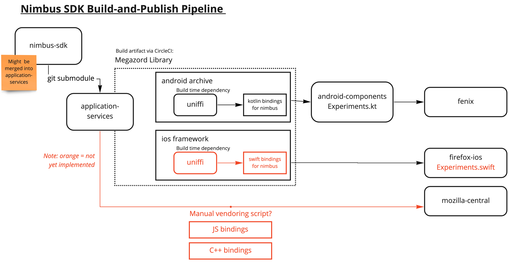

Application Services Rust Components
Application Services is collection of Rust Components. The components are used to enable Firefox, and related applications to integrate with Firefox accounts, sync and enable experimentation. Each component is built using a core of shared code written in Rust, wrapped with native language bindings for different platforms.
Contact us
To contact the Application Services team you can:
- Find us in the chat #rust-components:mozilla.org (How to connect)
- To report issues with sync on Firefox Desktop, file a bug in Bugzilla for Firefox :: Sync
- To report issues with our components, file an issue in the GitHub issue tracker
The source code is available on GitHub.
License
The Application Services Source Code is subject to the terms of the Mozilla Public License v2.0. You can obtain a copy of the MPL at https://mozilla.org/MPL/2.0/.
Contributing to Application Services
Anyone is welcome to help with the Application Services project. Feel free to get in touch with other community members on Matrix or through issues on GitHub.
Participation in this project is governed by the Mozilla Community Participation Guidelines.
Bug Reports
You can file issues on GitHub. Please try to include as much information as you can and under what conditions you saw the issue.
Building the project
Build instructions are available in the building page. Please let us know if you encounter any pain-points setting up your environment.
Finding issues
Below are a few different queries you can use to find appropriate issues to work on. Feel free to reach out if you need any additional clarification before picking up an issue.
- good first issues - If you are a new contributor, search for issues labeled
good-first-issue - good second issues - Once you’ve got that first PR approved and you are looking for something a little more challenging, we are keeping a list of next-level issues. Search for the
good-second-issuelabel. - papercuts - A collection of smaller sized issues that may be a bit more advanced than a first or second issue.
- important, but not urgent - For more advanced contributors, we have a collection of issues that we consider important and would like to resolve sooner, but work isn’t currently prioritized by the core team.
Sending Pull Requests
Patches should be submitted as pull requests (PRs).
When submitting PRs, We expect external contributors to push patches to a fork of
application-services. For more information about submitting PRs from forks, read GitHub’s guide.
Before submitting a PR:
- Your patch should include new tests that cover your changes, or be accompanied by explanation for why it doesn’t need any. It is your and your reviewer’s responsibility to ensure your patch includes adequate tests.
- Consult the testing guide for some tips on writing effective tests.
- Your code should pass all the automated tests before you submit your PR for review.
- Before pushing your changes, run
./automation/tests.py changes. The script will calculate which components were changed and run test suites, linters and formatters against those components. Because the script runs a limited set of tests, the script should execute in a fairly reasonable amount of time.
- Before pushing your changes, run
- Your patch should include a changelog entry in CHANGELOG.md or an explanation of why it does not need one. Any breaking changes to Swift or Kotlin binding APIs should be noted explicitly.
- If your patch adds new dependencies, they must follow our dependency management guidelines. Please include a summary of the due diligence applied in selecting new dependencies.
- After you open a PR, our Continuous Integration system will run a full test suite. It’s possible that this step will result in errors not caught with the script so make sure to check the results.
- “Work in progress” pull requests are welcome, but should be clearly labeled as such and should not be merged until all tests pass and the code has been reviewed.
- You can label pull requests as “Work in progress” by using the Github PR UI to indicate this PR is a draft (learn more about draft PRs).
When submitting a PR:
- You agree to license your code under the project’s open source license (MPL 2.0).
- Base your branch off the current
mainbranch. - Add both your code and new tests if relevant.
- Please do not include merge commits in pull requests; include only commits with the new relevant code.
- We encourage you to GPG sign your commits.
Code Review
This project is production Mozilla code and subject to our engineering practices and quality standards. Every patch must be peer reviewed by a member of the Application Services team.
Building Application Services
When working on Application Services, it’s important to set up your environment for building the Rust code and the Android or iOS code needed by the application.
First time builds
Building for the first time is more complicated than a typical Rust project. To build for an end-to-end experience that enables you to test changes in client applications like Firefox for Android (Fenix) and Firefox iOS, there are a number of build systems required for all the dependencies. The initial setup is likely to take a number of hours to complete.
Building the Rust Components
Complete this section before moving to the android/iOS build instructions.
- Make sure you cloned the repository:
$ git clone https://github.com/mozilla/application-services # (or use the ssh link)
$ cd application-services
$ git submodule update --init --recursive
-
Install Rust: install via rustup
-
Install your system dependencies:
Linux
-
Install the system dependencies required for building NSS
- Install gyp:
apt install gyp(required for NSS) - Install ninja-build:
apt install ninja-build - Install python3 (at least 3.6):
apt install python3 - Install zlib:
apt install zlib1g-dev - Install perl (needed to build openssl):
apt install perl - Install patch (to build the libs):
apt install patch
- Install gyp:
-
Install the system dependencies required for SQLcipher
- Install tcl:
apt install tclsh(required for SQLcipher)
- Install tcl:
-
Install the system dependencies required for bindgen
- Install libclang:
apt install libclang-dev
- Install libclang:
MacOS
- Install Xcode: check the ci config for the correct version.
- Install Xcode tools:
xcode-select --install - Install homebrew via its installation instructions (it’s what we use for ci).
- Install the system dependencies required for building NSS:
- Install ninja and python:
brew install ninja python - Make sure
which python3maps to the freshly installed homebrew python.- If it isn’t, add the following to your bash/zsh profile and
sourcethe profile before continuing:alias python3=$(brew --prefix)/bin/python3 - Ensure
pythonmaps to the same Python version. You may have to create a symlink:PYPATH=$(which python3); ln -s $PYPATH `dirname $PYPATH`/python
- If it isn’t, add the following to your bash/zsh profile and
- Install gyp:
wget https://bootstrap.pypa.io/ez_setup.py -O - | python3 - git clone https://chromium.googlesource.com/external/gyp.git ~/tools/gyp cd ~/tools/gyp pip install .- Add
~/tools/gypto your path:export PATH="~/tools/gyp:$PATH" - If you have additional questions, consult this guide.
- Add
- Make sure your homebrew python’s bin folder is on your path by updating your bash/zsh profile with the following:
export PATH="$PATH:$(brew --prefix)/opt/python@3.9/Frameworks/Python.framework/Versions/3.9/bin"
- Install ninja and python:
Windows
Install windows build tools
Why Windows Subsystem for Linux (WSL)?
It’s currently tricky to get some of these builds working on Windows, primarily due to our use of SQLcipher. By using WSL it is possible to get builds working, but still have them published to your “native” local maven cache so it’s available for use by a “native” Android Studio.
- Install WSL (recommended over native tooling)
- Install unzip:
sudo apt install unzip - Install python3:
sudo apt install python3Note: must be python 3.6 or later - Install system build tools:
sudo apt install build-essential - Install zlib:
sudo apt-get install zlib1g-dev - Install tcl:
sudo apt install tcl-dev
-
-
Check dependencies and environment variables by running:
./libs/verify-desktop-environment.sh
Note that this script might instruct you to set some environment variables, set those by adding them to your
.zshrcor.bashrcso they are set by default on your terminal. If it does so instruct you, you must run the command again after setting them so the libraries are built.
- Run cargo test:
cargo test
Once you have successfully run ./libs/verify-desktop-environment.sh and cargo test you can move to the Building for Fenix and Building for iOS sections below to setup your local environment for testing with our client applications.
Building for Fenix
The following instructions assume that you are building application-services for Fenix, and want to take advantage of the
Fenix Auto-publication workflow for android-components and application-services.
- Install Android SDK, JAVA, NDK and set required env vars
- Clone the firefox-android repository (not inside the Application Service repository).
- Install Java 17 for your system
- Set
JAVA_HOMEto point to the JDK 17 installation directory. - Download and install Android Studio.
- Set
ANDROID_SDK_ROOTandANDROID_HOMEto the Android Studio sdk location and add it to your rc file (either.zshrcor.bashrcdepending on the shell you use for your terminal). - Configure the required versions of NDK
Configure menu > System Settings > Android SDK > SDK Tools > NDK > Show Package Details > NDK (Side by side)- 29.0.14206865 (required by Application Services, as configured)
- If you are on Windows using WSL - drop to the section below, Windows setup for Android (WSL) before proceeding.
- Check dependencies, environment variables
- Run
./libs/verify-android-environment.sh - Follow instructions and rerun until it is successful.
- Run
Windows setup for Android (via WSL)
Note: For non-Ubuntu linux versions, it may be necessary to execute $ANDROID_HOME/tools/bin/sdkmanager "build-tools;26.0.2" "platform-tools" "platforms;android-26" "tools". See also this gist for additional information.
Configure Maven
Configure maven to use the native windows maven repository - then, when doing ./gradlew install from WSL, it ends up in the Windows maven repo. This means we can do a number of things with Android Studio in “native” windows and have then work correctly with stuff we built in WSL.
- Install maven:
sudo apt install maven - Confirm existence of (or create) a
~/.m2folder - In the
~/.m2create a file calledsettings.xml - Add the content below replacing
{username}with your username:
<settings>
<localRepository>/mnt/c/Users/{username}/.m2/repository</localRepository>
</settings>
Building for Firefox iOS
-
Install xcpretty:
gem install xcpretty -
Run
./libs/verify-ios-environment.shto check your setup and environment variables.- Make any corrections recommended by the script and re-run.
-
Run
./automation/build_ios_artifacts.shto build all the binaries, UniFFi bindings, Glean metrics generationNote: The artifacts generated in the above steps can then be used in any consuming product
Locally building Firefox iOS against a local Application Services
Detailed steps to build Firefox iOS against a local application services can be found this document
Using locally published components in Fenix
It’s often important to test work-in-progress changes to Application Services components against a real-world consumer project. The most reliable method of performing such testing is to publish your components to a local Maven repository, and adjust the consuming project to install them from there.
With support from the upstream project, it’s possible to do this in a single step using our auto-publishing workflow.
Using the auto-publishing workflow
mozilla-central has support for automatically publishing and including a local development version of application-services in the build. This is supported for most of the Android targets available in mozilla-central including Fenix - this doc will focus on Fenix, but the same general process is used for all. The workflow is:
Pre-requisites:
- Ensure you have a regular build of application-services working.
- Disable the gradle cache in mozilla-central - edit
./gradle.properties, comment outorg.gradle.configuration-cache=true - Ensure you have a regular build of Fenix from mozilla-central testable in Android Studio or an emulator.
Setup 2 x local.properties
Edit (or create) the file local.properties in each of the repos:
app-services
In the root of the app-services repo:
Please be sure you have read our guide to building Fenix and successfully built
using the instructions there. In particular, this may lead you to adding sdk.dir and ndk.dir properties, and/or
set environment variables ANDROID_SDK_ROOT and ANDROID_HOME.
In addition to those instructions, you will need:
rust.targets
Both the auto-publishing and manual workflows can be sped up significantly by
using the rust.targets property which limits which architectures the Rust
code gets build against. Adding a line like
rust.targets=x86,linux-x86-64. The trick is knowing which targets to put in
that comma separated list:
- Use
x86for running the app on most emulators on Intel hardware (in rare cases, when you have a 64-bit emulator, you’ll wantx86_64). - Use
arm64for emulators running on Apple Silicon Macs. - If you’re running the
android-componentsorfenixunit tests, then you’ll need the architecture of your machine:- OSX running Intel chips:
darwin-x86-64 - OSX running M1 chips:
darwin-aarch64 - Linux:
linux-x86-64
- OSX running Intel chips:
eg, on a Mac your local.properties file will have a single line, rust.targets=darwin-aarch64,arm64
mozilla-central
local.properties can be in the root of the mozilla-central checkout,
or in the project specific directory (eg, mobile/android/fenix) and you tell it where to
find your local checkout of application-services by adding a line like:
autoPublish.application-services.dir=path/to/your/checkout/of/application-services
Note that the path can be absolute or relative from local.properties. For example, if application-services
and mozilla-central are at the same level, and you are using a local.properties in the root of mozilla-central,
the relative path would be ../application-services
Build and test your Fenix again.
After configuring as described above, build and test your Fenix again.
If all goes well, this should automatically build your checkout of application-services, publish it
to a local maven repository, and configure the consuming project to install it from there instead of
from our published releases.
Other notes
Using Windows/WSL
Good luck! This implies you are also building mozilla-central in a Windows/WSL environment; please contribute docs if you got this working.
However, there’s an excellent chance that you will need to execute
./automation/publish_to_maven_local_if_modified.py from your local application-services root.
Caveats
- This assumes you are able to build both Fenix and application-services directly before following any of these instructions.
- Make sure you’re fully up to date in all repos, unless you know you need to not be.
- Contact us if you get stuck.
How to locally test Swift Package Manager components on Firefox iOS
This guide explains how to build and test Firefox iOS against a local Application Services checkout. For background on our Swift Package approach, see the ADR.
At a glance
Goal: Build a local Firefox iOS against a local Application Services.
Current workflow (recommended):
- Build an XCFramework from your local
application-services. - Point Firefox iOS’s local Swift package (
MozillaRustComponents/Package.swift) at that artifact (either an HTTPS URL + checksum, or a localpath:). - Update UniFFI generated swift source files.
- Reset package caches in Xcode and build Firefox iOS.
A legacy flow that uses the rust-components-swift package is documented at the end while we’re in mid-transition to the new system.
Prerequisites
- A local checkout of Firefox iOS that builds: https://github.com/mozilla-mobile/firefox-ios#building-the-code
- A local checkout of Application Services prepared for iOS builds: see Building for Firefox iOS
Step 1 — Build all artifacts needed from Application Services.
This step builds an XCFramework and also generates swift sources for the components with UniFFI.
From the root of your application-services checkout, execute:
./automation/build_ios_artifacts.sh
This produces:
megazords/ios-rust/MozillaRustComponents.xcframework, containing:- The compiled Rust code as a static library (for all iOS targets)
- C headers and Swift module maps for the components
megazords/ios-rust/MozillaRustComponents.xcframework.zip, which is a zip of the above directory. By default, firefox-ios consumes the .zip file, although as we discuss below, we will change firefox-ios to use the directory itself.megazords/ios-rust/Sources/MozillaRustComponentsWrapper/Generated/*.swift, which are the source files generated by UniFFI.
Step 2 — Point Firefox iOS to your local artifact
Firefox iOS consumes Application Services via a local Swift package in-repo at:
{path-to-firefox-ios}/MozillaRustComponents/Package.swift
update it as described below:
- Switch the binaryTarget to a local path - note however that the path can’t be absolute but must be relative to
Package.swift. For example, if you haveapplication-serviceschecked out next to thefirefox-iosrepo, a suitable relative path might be../../application-services/megazords/ios-rust/MozillaRustComponents.xcframework - Comment out or remove the
urlandchecksumelements - they aren’t needed when pointing to a local path:
// In firefox-ios/MozillaRustComponents/Package.swift
.binaryTarget(
name: "MozillaRustComponents",
// ** Comment out the existing `url` and `checksum` entries
// url: url,
// checksum: checksum
// ** Add a new `path` entry.
path: "../../application-services/megazords/ios-rust/MozillaRustComponents.xcframework"
)
- Update UniFFI generated files: manually copy
./megazords/ios-rust/Sources/MozillaRustComponentsWrapper/Generated/*.swiftfrom yourapplication-servicesdirectory to the existing./MozillaRustComponents/Sources/MozillaRustComponentsWrapper/Generated/.directory in yourfirefox-ioscheckout.
for example, from the root of your application-services directory:
cp ./megazords/ios-rust/Sources/MozillaRustComponentsWrapper/Generated/*.swift ../firefox-ios/MozillaRustComponents/Sources/MozillaRustComponentsWrapper/Generated/.
Step 3 — Reset caches and build
In Xcode:
- File → Packages → Reset Package Caches
- (If needed) File → Packages → Update to Latest Package Versions
- Product → Clean Build Folder, then build and run Firefox iOS.
If you still see stale artifacts (rare), delete:
~/Library/Caches/org.swift.swiftpm
~/Library/Developer/Xcode/DerivedData/*
…and build again.
Using an external XCFramework artifact.
The instructions above all assume you have an XCFramework you built locally. However, it might be
the case where you want to use a MozillaRustComponents.xcframework.zip from an HTTPS-accessible URL
(e.g., a Taskcluster or GitHub artifact URL).
In this scenario, you also need the checksum of the zip file - this can be obtained by executing
swift package compute-checksum megazords/ios-rust/MozillaRustComponents.xcframework.zip
However, that means you need to have the .zip file locally - in which case you might as well unzip it and use the instructions above for consuming it from a local path!
But for completeness, once you have a https URL and the checksum you should
edit MozillaRustComponents/Package.swift and set the binaryTarget to the zip URL and checksum:
// In firefox-ios/MozillaRustComponents/Package.swift
.binaryTarget(
name: "MozillaRustComponents",
url: "https://example.com/path/MozillaRustComponents.xcframework.zip",
checksum: "<sha256 from `swift package compute-checksum`>"
)
Note: Every time you produce a new zip, you must update the checksum.
Note: The above instructions do not handle copying updated files generated by UniFFI. If you have changed the public API of any components, this process as written will not work.
Disabling local development
To revert quickly:
- Restore your changes to MozillaRustComponents/Package.swift (e.g., git checkout – MozillaRustComponents/Package.swift).
- Reset Package Caches in Xcode.
- Build Firefox iOS.
Troubleshooting
- Old binary still in use: Reset caches and clear DerivedData, then rebuild.
- Branch switches in application-services: Rebuild the XCFramework and update the package reference (URL/checksum or path:).
- Checksum mismatch (URL mode): Run swift package compute-checksum on the new zip and update Package.swift.
- Build script issues: Re-run ./build-xcframework.sh from megazords/ios-rust.
Legacy: using rust-components-swift (remote package)
[!WARNING] Status: rust-components-swift is deprecated for Firefox iOS. Prefer the local package at MozillaRustComponents/ unless you must validate against the legacy package for a specific task.
Some teams may still need the legacy flow temporarily. Historically, Firefox iOS consumed Application Services through the rust-components-swift package. To test locally with that setup:
- Build the XCFramework from application-services.
- In a local checkout of rust-components-swift, point its Package.swift to the local path of the unzipped XCFramework:
.binaryTarget( name: "MozillaRustComponents", path: "./MozillaRustComponents.xcframework" ) - Commit the changes in rust-components-swift (Xcode only reads committed package content).
- In Firefox iOS, replace the package dependency with a local reference to your rust-components-swift checkout (e.g., via Xcode’s “Add Local…” in Package Dependencies).
How to locally test Swift Package Manager components on Focus iOS
This is a guide on testing the Swift Package Manager component locally against a local build of Focus iOS. For more information on our Swift Package Manager design, read the ADR that introduced it
NOTE - This guide is slightly out of date and needs to be updated. Better instructions can be found in the instructions for Firefox, but that process needs some Focus-specific tweaks.
This guide assumes the component you want to test is already distributed with the
rust-components-swiftrepository, you can read the guide for adding a new component if you would like to distribute a new component.
To test a component locally, you will need to do the following:
- Build an xcframework in a local checkout of
application-services - Include the xcframework in a local checkout of
rust-components-swift - Run the
make-tagscript inrust-components-swiftusing a local checkout ofapplication-services - Include the local checkout of
rust-components-swiftinFocus
Below are more detailed instructions for each step
Building the xcframework
To build the xcframework do the following:
- In a local checkout of
application-services, navigate tomegazords/ios-rust/ - Run the
build-xcframework.shscript:
$ ./build-xcframework.sh --focus
This will produce a file name FocusRustComponents.xcframework.zip in the focus directory that contains the following, built for all our target iOS platforms.
- The compiled Rust code for all the crates listed in
Cargo.tomlas a static library - The C header files and Swift module maps for the components
Include the xcframework in a local checkout of rust-components-swift
After you generated the FocusRustComponents.xcframework.zip in the previous step, do the following to include it in a local checkout of rust-components-swift:
- clone a local checkout of
rust-components-swift, not inside theapplication-servicesrepository:git clone https://github.com/mozilla/rust-components.swift.git - Unzip the
FocusRustComponents.xcframework.zipinto therust-components-swiftrepository: (Assuming you are in the root of therust-components-swiftdirectory andapplication-servicesis a neighbor directory)unzip -o ../application-services/megazords/ios-rust/focus/FocusRustComponents.xcframework.zip -d . - Change the
Package.swift’s reference to the xcframework to point to the unzippedFocusRustComponents.xcframeworkthat was created in the previous step. You can do this by uncommenting the following line:
and commenting out the following lines:path: "./FocusRustComponents.xcframework"url: focusUrl, checksum: focusChecksum,
Run the generation script with a local checkout of application services
For this step, run the following script from inside the rust-components-swift repository (assuming that application-services is a neighboring directory to rust-components-swift).
./generate.sh ../application-services
Once that is done, stage and commit the changes the script ran. Xcode can only pick up committed changes.
Include the local checkout of rust-components-swift in Focus
This is the final step to include your local changes into Focus. Do the following steps:
-
Clone a local checkout of
Focusif you haven’t already. Make sure you also install the project dependencies, more information in their build instructions -
Open
Blockzilla.xcodeprojin Xcode -
Navigate to the Swift Packages in Xcode:


-
Remove the dependency on
rust-components-swiftas listed on Xcode, you can click the dependency then click the- -
Add a new swift package by clicking the
+:- On the top right, enter the full path to your
rust-components-swiftcheckout, preceded byfile://. If you don’t know what that is, runpwdin while inrust-components-swift. For example:file:///Users/tarikeshaq/code/rust-components-swift - Change the branch to be the checked-out branch of rust-component-swift you have locally. This is what the dialog should look like:
- Click
Add Package - Now include the
FocusAppServiceslibrary.
Note: If Xcode prevents you from adding the dependency to reference a local package, you will need to manually modify the
Blockzilla.xcodeproj/project.pbxprojand replace every occurrence ofhttps://github.com/mozilla/rust-components-swiftwith the full path to your local checkout. - On the top right, enter the full path to your
-
Finally, attempt to build focus, and if all goes well it should launch with your code. If you face any problems, feel free to contact us
Building and using a locally-modified version of JNA
Java Native Access is an important dependency for the Application Services components on Android, as it provides the low-level interface from the JVM into the natively-compiled Rust code.
If you need to work with a locally-modified version of JNA (e.g. to investigate an apparent JNA bug) then you may find these notes helpful.
The JNA docs do have an Android Development Environment guide that is a good starting point, but the instructions did not work for me and appear a little out of date. Here are the steps that worked for me:
-
Modify your environment to specify
$NDK_PLATFORM, and to ensure the Android NDK tools for each target platform are in your$PATH. On my Mac with Android Studio the config was as follows:export NDK_ROOT="$HOME/Library/Android/sdk/ndk/28.2.13676358" export NDK_PLATFORM="$NDK_ROOT/platforms/android-25" export PATH="$PATH:$NDK_ROOT/toolchains/llvm/prebuilt/darwin-x86_64/bin" export PATH="$PATH:$NDK_ROOT/toolchains/aarch64-linux-android-4.9/prebuilt/darwin-x86_64/bin" export PATH="$PATH:$NDK_ROOT/toolchains/arm-linux-androideabi-4.9/prebuilt/darwin-x86_64/bin" export PATH="$PATH:$NDK_ROOT/toolchains/x86-4.9/prebuilt/darwin-x86_64/bin" export PATH="$PATH:$NDK_ROOT/toolchains/x86_64-4.9/prebuilt/darwin-x86_64/bin"You will probably need to tweak the paths and version numbers based on your operating system and the details of how you installed the Android NDK.
-
Install the
antbuild tool (usingbrew install antworked for me). -
Checkout the JNA source from Github. Try doing a basic build via
ant distandant test. This won’t build for Android but will test the rest of the tooling. -
Adjust
./native/Makefilefor compatibility with your Android NSK install. Here’s what I had to do for mine:- Adjust the
$CCvariable to use clang instead of gcc:CC=aarch64-linux-android21-clang. - Adjust thd
$CCPvariable to use the version from your system:CPP=cpp. - Add
-landroid -llogto the list of libraries to link against in$LIBS.
- Adjust the
-
Build the JNA native libraries for the target platforms of interest:
ant -Dos.prefix=android-aarch64ant -Dos.prefix=android-armv7ant -Dos.prefix=android-x86-64
-
Package the newly-built native libraries into a JAR/AAR using
ant dist. This should produce./dist/jna.aar. -
Configure
build.gradlefor the consuming application to use the locally-built JNA artifact:// Tell gradle where to look for local artifacts. repositories { flatDir { dirs "/PATH/TO/YOUR/CHECKOUT/OF/jna/dist" } } // Tell gradle to exclude the published version of JNA. configurations { implementation { exclude group: "net.java.dev.jna", module:"jna" } } // Take a direct dependency on the local JNA AAR. dependencies { implementation name: "jna", ext: "aar" } -
Rebuild and run your consuming application, and it should be using the locally-built JNA!
If you’re trying to debug some unexpected JNA behaviour (and if you favour old-school printf-style debugging) then you can this code snippet to print to the Android log from the compiled native code:
#ifdef __ANDROID__
#include <android/log.h>
#define HACKY_ANDROID_LOG(...) __android_log_print(ANDROID_LOG_VERBOSE, "HACKY-DEBUGGING-FOR-ALL", __VA_ARGS__)
#else
#define HACKY_ANDROID_LOG(MSG)
#endif
HACKY_ANDROID_LOG("this will go to the android logcat output");
HACKY_ANDROID_LOG("it accepts printf-style format sequences, like this: %d", 42);
Branch builds
Branch builds are a way to build and test Fenix using branches from application-services and firefox-android.
iOS is not currently supported, although we may add it in the future (see #4966).
Application-services nightlies
When we make non-breaking changes, we typically merge them into main and let them sit there until the next release. In
order to check that the current main really does only have non-breaking changes, we run a nightly branch build from the
main branch of application-services,
- To view the latest branch builds:
- Open the latest decision task from the task index.
- Click the “View Task” link
- Click “Task Group” in the top-left
- You should now see a list of tasks from the latest nightly
*-buildwere for building the application. A failure here indicates there’s probably a breaking change that needs to be resolved.- To get the APK, navigate to
branch-build-fenix-buildand downloadapp-x86-debug.apkfrom the artifacts list branch-build-ac-test.*are the android-components tests tasks. These are split up by gradle project, which matches how the android-components CI handles things. Running all the tests together often leads to failures.branch-build-fenix-testis the Fenix tests. These are not split up per-project.
- These builds are triggered by our .cron.yml file
Guide to Testing a Rust Component
This document gives a high-level overview of how we test components in application-services.
It will be useful to you if you’re adding a new component, or working on increasing the test
coverage of an existing component.
If you are only interested in running the existing test suite, please consult the contributor docs and the tests.py script.
Unit and Functional Tests
Rust code
Since the core implementations of our components live in rust, so does the core of our testing strategy.
Each rust component should be accompanied by a suite of unit tests, following the guidelines for writing tests from the Rust Book. Some additional tips:
-
Where possible, it’s better use use the Rust typesystem to make bugs impossible than to write tests to assert that they don’t occur in practice. But given that the ultimate consumers of our code are not in Rust, that’s sometimes not possible. The best idiomatic Rust API for a feature is not necessarily the best API for consuming it over an FFI boundary.
-
Rust’s builtin assertion macros are sparse; we use the more_asserts for some additional helpers.
-
Rust’s strict typing can make test mocks difficult. If there’s something you need to mock out in tests, make it a Trait and use the mockiato crate to mock it.
The Rust tests for a component should be runnable via cargo test.
FFI Layer code
We are currently using uniffi to generate most ((and soon all!) of our FFI code and thus the FFI code itself does not need to be extensively tested.
Kotlin code
The Kotlin wrapper code for a component should have its own test suite, which should follow the general guidelines for testing Android code in Mozilla projects. In practice that means we use JUnit as the test framework and Robolectric to provide implementations of Android-specific APIs.
The Kotlin tests for a component should be runnable via ./gradlew <component>:test.
The tests at this layer are designed to ensure that the API binding code is working as intended, and should not repeat tests for functionality that is already well tested at the Rust level. But given that the Kotlin bindings involve a non-trivial amount of hand-written boilerplate code, it’s important to exercise that code thoroughly.
One complication with running Kotlin tests is that the code needs to run on your local development machine,
but the Kotlin code’s native dependencies are typically compiled and packaged for Android devices. The
tests need to ensure that an appropriate version of JNA and of the compiled Rust code is available in
their library search path at runtime. Our build.gradle files contain a collection of hackery that ensures
this, which should be copied into any new components.
The majority of our Kotlin bindings are autogenerated using uniffi and do not need extensive testing.
Swift code
The Swift wrapper code for a component should have its own test suite, using Apple’s Xcode unittest framework.
Due to the way that all rust components need to be compiled together into a single “megazord”
framework, this entire repository is a single Xcode project. The Swift tests for each component
thus need to live under megazords/ios-rust/MozillaTestServicesTests/ rather than in the directory
for the corresponding component. (XXX TODO: is this true? it would be nice to find a way to avoid having
them live separately because it makes them easy to overlook).
The tests at this layer are designed to ensure that the API binding code is working as intended, and should not repeat tests for functionality that is already well tested at the Rust level. But given that the Swift bindings involve a non-trivial amount of hand-written boilerplate code, it’s important to exercise that code thoroughly.
The majority of our Swift bindings are autogenerated using uniffi and do not need extensive testing.
Integration tests
End-to-end Sync Tests
⚠️ Those tests were disabled because of how flakey the stage server was. See #3909 ⚠️
The testing/sync-test directory contains a test harness for running sync-related
Rust components against a live Firefox Sync infrastructure, so that we can verifying the functionality
end-to-end.
Each component that implements a sync engine should have a corresponding suite of tests in this directory.
- XXX TODO: places doesn’t.
- XXX TODO: send-tab doesn’t (not technically a sync engine, but still, it’s related)
- XXX TODO: sync-manager doesn’t
Android Components Test Suite
It’s important that changes in application-services are tested against upstream consumer code in the
android-components repo. This is currently
a manual process involving:
- Configuring your local checkout of android-components to use your local application-services build.
- Running the android-components test suite via
./gradle test. - Manually building and running the android-components sample apps to verify that they’re still working.
Ideally some or all of this would be automated and run in CI, but we have not yet invested in such automation.
Ideas for Improvement
- ASan, Memsan, and maybe other sanitizer checks, especially around the points where we cross FFI boundaries.
- General-purpose fuzzing, such as via https://github.com/jakubadamw/arbitrary-model-tests
- We could consider making a mocking backend for viaduct, which would also be mockable from Kotlin/Swift.
- Add more end-to-end integration tests!
- Live device tests, e.g. actual Fenixes running in an emulator and syncing to each other.
- Run consumer integration tests in CI against main.
Smoke testing Application Services against end-user apps
This is a great way of finding integration bugs with application-services.
The testing can be done manually using substitution scripts, but we also have scripts that will do the smoke-testing for you.
Dependencies
Run pip3 install -r automation/requirements.txt to install the required Python packages.
Android Components
The automation/smoke-test-android-components.py script will clone (or use a local version) of
android-components and run a subset of its tests against the current application-services worktree.
It tries to only run tests that might be relevant to application-services functionality.
Fenix
The automation/smoke-test-fenix.py script will clone (or use a local version) of Fenix and
run tests against the current application-services worktree.
Firefox iOS
The automation/smoke-test-fxios.py script will clone (or use a local version) of Firefox iOS and
run tests against the current application-services worktree.
Testing faster: How to avoid making compile times worse by adding tests
Background
We’d like to keep cargo test, cargo build, cargo check, … reasonably
fast, and we’d really like to keep them fast if you pass -p for a specific
project. Unfortunately, there are a few ways this can become unexpectedly slow.
The easiest of these problems for us to combat at the moment is the unfortunate
placement of dev-dependencies in our build graph.
If you perform a cargo test -p foo, all dev-dependencies of foo must be
compiled before foo’s tests can start. This includes dependencies only used
non-test targets, such as examples or benchmarks.
In an ideal world, cargo could run your tests as soon as it finished with the dependencies it needs for those tests, instead of waiting for your benchmark suite, or the arg-parser your examples use, or etc.
Unfortunately, all cargo knows is that these are dev-dependencies, and not
which targets actually use them.
Additionally, unqualified invocations of cargo (that is, without -p) might
have an even worse time if we aren’t careful. If I run, cargo test, cargo
knows every crate in the workspace needs to be built with all dev
dependencies, if places depends on fxa-client, all of fxa-clients
dev-dependencies must be compiled, ready, and linked in at least to the lib
target before we can even think about starting on places.
We have not been careful about what shape the dependency graph ends up as when example code is taken into consideration (as it is by cargo during certain builds), and as a result, we have this problem. Which isn’t really a problem we want to fix: Example code can and should depend on several different components, and use them together in interesting ways.
So, because we don’t want to change what our examples do, or make major architectural changes of the non-test code for something like this, we need to do something else.
The Solution
To fix this, we manually insert “cuts” into the dependency graph to help cargo out. That is, we pull some of these build targets (e.g. examples, benchmarks, tests if they cause a substantial compile overhead) into their own dedicated crates so that:
- They can be built in parallel with each other.
- Crates depending on the component itself are not waiting on the test/bench/example build in order for their test build to begin.
- A potentially smaller set of our crates need to be rebuilt – and a smaller set of possible configurations exist meaning fewer items to add pressure to caches.
- …
Some rules of thumb for when / when not to do this:
-
All rust examples should be put in
examples/*. -
All rust benchmarks should be put in
testing/separated/*. See the section below on how to set your benchmark up to avoid redundant compiles. -
Rust tests which brings in heavyweight dependencies should be evaluated on an ad-hoc basis. If you’re concerned, measure how long compilation takes with/without, and consider how many crates depend on the crate where the test lives (e.g. a slow test in support/foo might be far worse than one in a leaf crate), etc…
Appendix: How to avoid redundant compiles for benchmarks and integration tests
To be clear, this is way more important for benchmarks (which always compile as release and have a costly link phase).
Say you have a directory structure like the following:
mycrate
├── src
│ └── lib.rs
| ...
├── benches
│ ├── bench0.rs
| ├── bench1.rs
│ └── bench2.rs
├── tests
│ ├── test0.rs
| ├── test1.rs
│ └── test2.rs
└── ...
When you run your integration tests or benchmarks, each of test0, test1,
test2 or bench0, bench1, bench2 is compiled as it’s own crate that runs
the tests in question and exits.
That means 3 benchmark executables are built on release settings, and 3 integration test executables.
If you’ve ever tried to add a piece of shared utility code into your integration
tests, only to have cargo (falsely) complain that it is dead code: this is why.
Even if test0.rs and test2.rs both use the utility function, unless
every test crate uses every shared utility, the crate that doesn’t will
complain.
(Aside: This turns out to be an unintentional secondary benefit of this approach
– easier shared code among tests, without having to put a
#![allow(dead_code)] in your utils.rs. We haven’t hit that very much here,
since we tend to stick to unit tests, but it came up in mentat several times,
and is a frequent complaint people have)
Anyway, the solution here is simple: Create a new crate. If you were working in
components/mycrate and you want to add some integration tests or benchmarks,
you should do cargo new --lib testing/separated/mycrate-test (or
.../mycrate-bench).
Delete .../mycrate-test/src/lib.rs. Yep, really, we’re making a crate that
only has integration tests/benchmarks (See the “FAQ0” section at the bottom of
the file if you’re getting incredulous).
Now, add a src/tests.rs or a src/benches.rs. This file should contain mod foo; declarations for each submodule containing tests/benchmarks, if any.
For benches, this is also where you set up the benchmark harness (refer to benchmark library docs for how).
Now, for a test, add: into your Cargo.toml
[[test]]
name = "mycrate-test"
path = "src/tests.rs"
and for a benchmark, add:
[[bench]]
name = "mycrate-benches"
path = "src/benches.rs"
harness = false
Because we aren’t using src/lib.rs, this is what declares which file is the
root of the test/benchmark crate. Because there’s only one target (unlike with
tests/* / benches/* under default settings), this will compile more quickly.
Additionally, src/tests.rs and src/benches.rs will behave like a normal
crate, the only difference being that they don’t produce a lib, and that they’re
triggered by cargo test/cargo run respectively.
FAQ0: Why put tests/benches in src/* instead of disabling autotests/autobenches
Instead of putting tests/benchmarks inside src, we could just delete the src
dir outright, and place everything in tests/benches.
Then, to get the same one-rebuild-per-file behavior that we’ll get in src, we
need to add autotests = false or autobenches = false to our Cargo.toml,
adding a root tests/tests.rs (or benches/benches.rs) containing mod decls
for all submodules, and finally by referencing that “root” in the Cargo.toml
[[tests]] / [[benches]] list, exactly the same way we did for using src/*.
This would work, and on the surface, using tests/*.rs and benches/*.rs seems
more consistent, so it seems weird to use src/*.rs for these files.
My reasoning is as follows: Almost universally, tests/*.rs, examples/*.rs,
benches/*.rs, etc. are automatic. If you add a test into the tests folder, it
will run without anything else.
If we’re going to set up one-build-per-{test,bench}suite as I described, this
fundamentally cannot be true. In this paradigm, if you add a test file named
blah.rs, you must add a mod blah it to the parent module.
It seems both confusing and error-prone to use tests/*, but have it behave
that way, however this is absolutely the normal behavior for files in src/*.rs
– When you add a file, you then need to add it to it’s parent module, and this
is something Rust programmers are pretty used to.
(In fact, we even replicated this behavior (for no reason) in the places
integration tests, and added the mod declarations to a “controlling” parent
module – It seems weird to be in an environment where this isn’t required)
So, that’s why. This way, we make it way less likely that you add a test file
to some directory, and have it get ignored because you didn’t realize that in
this one folder, you need to add a mod mytest into a neighboring tests.rs.
Debugging Sql
It can be quite tricky to debug what is going on with sql statement, especially once the sql gets complicated or many triggers are involved.
The sql_support create provides some utilities to help. Note that
these utilities are gated behind a debug-tools feature. The module
provides docstrings, so you should read them before you start.
This document describes how to use these capabilities and we’ll use places
as an example.
First, we must enable the feature:
--- a/components/places/Cargo.toml
+++ b/components/places/Cargo.toml
@@ -22,7 +22,7 @@ lazy_static = "1.4"
url = { version = "2.1", features = ["serde"] }
percent-encoding = "2.1"
caseless = "0.2"
-sql-support = { path = "../support/sql" }
+sql-support = { path = "../support/sql", features=["debug-tools"] }
and we probably need to make the debug functions available:
--- a/components/places/src/db/db.rs
+++ b/components/places/src/db/db.rs
@@ -108,6 +108,7 @@ impl ConnectionInitializer for PlacesInitializer {
";
conn.execute_batch(initial_pragmas)?;
define_functions(conn, self.api_id)?;
+ sql_support::debug_tools::define_debug_functions(conn)?;
We now have a Rust function print_query() and a SQL function dbg() available.
Let’s say we were trying to debug a test such as test_bookmark_tombstone_auto_created.
We might want to print the entire contents of a table, then instrument a query to check
what the value of a query is. We might end up with a patch something like:
index 28f19307..225dccbb 100644
--- a/components/places/src/db/schema.rs
+++ b/components/places/src/db/schema.rs
@@ -666,7 +666,8 @@ mod tests {
[],
)
.expect("should insert regular bookmark folder");
- conn.execute("DELETE FROM moz_bookmarks WHERE guid = 'bookmarkguid'", [])
+ sql_support::debug_tools::print_query(&conn, "select * from moz_bookmarks").unwrap();
+ conn.execute("DELETE FROM moz_bookmarks WHERE dbg('CHECKING GUID', guid) = 'bookmarkguid'", [])
.expect("should delete");
// should have a tombstone.
assert_eq!(
There are 2 things of note:
- We used the
print_queryfunction to dump the entiremoz_bookmarkstable before executing the query. - We instrumented the query to print the
guidevery time sqlite reads a row and compares it against a literal.
The output of this test now looks something like:
running 1 test
query: select * from moz_bookmarks
+----+------+------+--------+----------+---------+---------------+---------------+--------------+------------+-------------------+
| id | fk | type | parent | position | title | dateAdded | lastModified | guid | syncStatus | syncChangeCounter |
+====+======+======+========+==========+=========+===============+===============+==============+============+===================+
| 1 | null | 2 | null | 0 | root | 1686248350470 | 1686248350470 | root________ | 1 | 1 |
+----+------+------+--------+----------+---------+---------------+---------------+--------------+------------+-------------------+
| 2 | null | 2 | 1 | 0 | menu | 1686248350470 | 1686248350470 | menu________ | 1 | 1 |
+----+------+------+--------+----------+---------+---------------+---------------+--------------+------------+-------------------+
| 3 | null | 2 | 1 | 1 | toolbar | 1686248350470 | 1686248350470 | toolbar_____ | 1 | 1 |
+----+------+------+--------+----------+---------+---------------+---------------+--------------+------------+-------------------+
| 4 | null | 2 | 1 | 2 | unfiled | 1686248350470 | 1686248350470 | unfiled_____ | 1 | 1 |
+----+------+------+--------+----------+---------+---------------+---------------+--------------+------------+-------------------+
| 5 | null | 2 | 1 | 3 | mobile | 1686248350470 | 1686248350470 | mobile______ | 1 | 1 |
+----+------+------+--------+----------+---------+---------------+---------------+--------------+------------+-------------------+
| 6 | null | 3 | 1 | 0 | null | 1 | 1 | bookmarkguid | 2 | 1 |
+----+------+------+--------+----------+---------+---------------+---------------+--------------+------------+-------------------+
test db::schema::tests::test_bookmark_tombstone_auto_created ... FAILED
failures:
---- db::schema::tests::test_bookmark_tombstone_auto_created stdout ----
CHECKING GUID root________
CHECKING GUID menu________
CHECKING GUID toolbar_____
CHECKING GUID unfiled_____
CHECKING GUID mobile______
CHECKING GUID bookmarkguid
It’s unfortunate that the output of print_table() goes to the tty while the output of dbg goes to stderr, so
you might find the output isn’t quite intermingled as you would expect, but it’s better than nothing!
Dependency Management Guidelines
This repository uses third-party code from a variety of sources, so we need to be mindful of how these dependencies will affect our consumers. Considerations include:
- General code quality.
- Licensing compatibility.
- Handling of security vulnerabilities.
- The potential for supply-chain compromise.
We’re still evolving our policies in this area, but these are the guidelines we’ve developed so far.
Rust Code
Unlike Firefox,
we do not vendor third-party source code directly into the repository. Instead we rely on
Cargo.lock and its hash validation to ensure that each build uses an identical copy
of all third-party crates. These are the measures we use for ongoing maintence of our
existing dependencies:
- Check
Cargo.lockinto the repository. - Generate built artifacts using the
--lockedflag tocargo build, as an additional assurance that the existingCargo.lockwill be respected. - Regularly run cargo-audit in CI to alert us to
security problems in our dependencies.
- It runs on every PR, and once per hour on the
mainbranch
- It runs on every PR, and once per hour on the
- Use a home-grown tool to generate a summary of dependency licenses
and to check them for compatibility with MPL-2.0.
- Check these summaries into the repository and have CI alert on unexpected changes, to guard against pulling in new versions of a dependency under a different license.
Adding a new dependency, whether we like it or not, is a big deal - that dependency and everything it brings with it will become part of Firefox-branded products that we ship to end users. We try to balance this responsibility against the many benefits of using existing code, as follows:
- In general, be conservative in adding new third-party dependencies.
- For trivial functionality, consider just writing it yourself. Remember the cautionary tale of left-pad.
- Check if we already have a crate in our dependency tree that can provide the needed functionality.
- Prefer crates that have a a high level of due-diligence already applied, such as:
- Crates that are already vendored into Firefox.
- Crates from rust-lang-nursery.
- Crates that appear to be widely used in the rust community.
- Check that it is clearly licensed and is MPL-2.0 compatible.
- Take the time to investigate the crate’s source and ensure it is suitably high-quality.
- Be especially wary of uses of
unsafe, or of code that is unusually resource-intensive to build. - Dev dependencies do not require as much scrutiny as dependencies that will ship in consuming applications,
but should still be given some thought.
- There is still the potential for supply-chain compromise with dev dependencies!
- Be especially wary of uses of
- As part of the PR that introduces the new dependency:
- Regenerate dependency summary files using the regenerate_dependency_summaries.sh.
- Explicitly describe your consideration of the above points.
Updating to new versions of existing dependencies is a normal part of software development and is not accompanied by any particular ceremony.
Android/Kotlin Code
We currently depend only on the following Kotlin dependencies:
We currently depend on the following developer dependencies in the Kotlin codebase, but they do not get included in built distribution files:
- detekt
- ktlint
No additional Kotlin dependencies should be added to the project unless absolutely necessary.
iOS/Swift Code
We currently do not depend on any Swift dependencies. And no Swift dependencies should be added to the project unless absolutely necessary.
Other Code
We currently depend on local builds of the following system dependencies:
No additional system dependencies should be added to the project unless absolutely necessary.
Adding a new component to Application Services
This is a rapid-fire list for adding a component from scratch and generating Kotlin/Swift bindings.
The Rust Code
Your component should live under ./components in this repo.
Use cargo new --lib ./components/<your_crate_name>to create a new library crate.
See the Guide to Building a Rust Component for general advice on designing and structuring the actual Rust code, and follow the Dependency Management Guidelines if your crate introduces any new dependencies.
Use UniFFI to define how your crate’s
API will get exposed to foreign-language bindings. Lookup the installed uniffi
version on other packages (eg grep uniffi components/init_rust_components/Cargo.toml) and use the same version. Place
the following in your Cargo.toml:
[dependencies]
uniffi = { version = "<current uniffi version>" }
New components should prefer using the
proc-macro approach rather than
a UDL file based approach. If you do use a UDL file, add this to Cargo.toml as well.
[build-dependencies]
uniffi = { version = "<current uniffi version>" }
Include your new crate in the application-services workspace, by adding
it to the members and default-members lists in the Cargo.toml at
the root of the repository.
Run cargo check -p <your_crate_name> in the repository root to confirm that
things are configured properly. This will also have the side-effect of updating
Cargo.lock to contain your new crate and its dependencies.
The Android Bindings
Run the cargo start-bindings android <your_crate_name> <component_description> command to auto-generate the initial code. Follow the directions in the output.
You will end up with a directory structure something like this:
components/<your_crate_name>/Cargo.tomluniffi.tomlsrc/- Rust code here.
android/build.gradlesrc/main/AndroidManifest.xml
Dependent crates
If your crate uses types from another crate in it’s public API, you need to include a dependency for
the corresponding project in your android/build.gradle file.
For example, suppose use the remote_settings::RemoteSettingsServer type in your public API so that
consumers can select which server they want. In that case, you need to a dependency on the
remotesettings project:
dependencies {
api project(":remotesettings")
}
Async dependencies
If your components exports async functions, add the following to your android/build.gradle file:
dependencies {
implementation libs.kotlin.coroutines
}
Hand-written code
You can include hand-written Kotlin code alongside the automatically generated bindings, by placing `.kt`` files in a directory named:
./android/src/test/java/mozilla/appservices/<your_crate_name>/
You can write Kotlin-level tests that consume your component’s API, by placing `.kt`` files in a directory named:
./android/src/test/java/mozilla/appservices/<your_crate_name>/.
You can run the tests with ./gradlew <your_crate_name>:test
The iOS Bindings
- Run the
cargo start-bindings ios <your_crate_name>command to auto-generate the initial code - Run
cargo start-bindings ios-focus <your_crate_name>if you also want to expose your component to Focus. - Follow the directions in the output.
You will end up with a directory structure something like this:
components/<your_crate_name>/Cargo.tomluniffi.tomlsrc/- Rust code here.
Adding your component to the Swift Package Megazord
For more information on our how we ship components using the Swift Package Manager, check the ADR that introduced the Swift Package Manager
Add your component into the iOS “megazord” through the local Swift Package Manager (SPM) package MozillaRustComponentsWrapper. Note this SPM is for ease of testing APIs locally. The official SPM that is consumed by firefox-ios is a local package in their repo.
- Place your Swift test code in:
megazords/ios-rust/tests/MozillaRustComponentsWrapper/
Note: swift-specific tests are ideally suited in the consuming app as there is better integration coverage and ensures we’re accurately testing how it’s being consumed
That’s it! At this point, if you don’t intend on writing tests (are you sure?) you can skip this next section.
Writing and Running Tests
The current system combines all rust crates into one binary (megazord). To use your rust APIs simply import the local SPM into your tests:
@testable import MozillaRustComponentsWrapper
To test your component:
- Run the script:
./automation/build_ios_artifacts.sh
The script will:
- Build the XCFramework (combines all rust binaries for SPM)
- Generate UniFFi bindings (generated files will be found in
megazords/ios-rust/sources/MozillaRustComponentsWrapper/Generated/) - Generate Glean metrics
- Run any tests found in the test dir mentioned above
Distribution of the component
The UniFFi files will be generated & packaged via taskcluster/scripts/build-and-test-swift.py.
Consumers (eg: Firefox iOS) pull the latest artifacts via a nightly Gitub action. Once your changes are pulled via a nightly release you’ll be able to use your new APIs!
Note: If you don’t want to wait for a nightly, once the CI finishes your build – you can request the action run in firefox-ios to get it sooner
Note pt2: If you want to locally test against firefox-ios, follow this guide
Guide to Building a Syncable Rust Component
This is a guide to creating a new Syncable Rust Component like many of the components in this repo. If you are looking for information how to build (ie,compile, etc) the existing components, you are looking for our build documentation
Welcome!
It’s great that you want to build a Rust Component - this guide should help get you started. It documents some nomenclature, best-practices and other tips and tricks to get you started.
This document is just for general guidance - every component will be different and we are still learning how to make these components. Please update this document with these learnings.
To repeat with emphasis - please consider this a living document.
General design and structure of the component
We think components should be structured as described here.
We build libraries, not frameworks
Think of building a “library”, not a “framework” - the application should be in control and calling functions exposed by your component, not providing functions for your component to call.
The “store” is the “entry-point”
[Note that some of the older components use the term “store” differently; we
should rename them! In Places, it’s called an “API”; in Logins an “engine”. See
webext-storage for a more recent component that uses the term “Store” as we
think it should be used.]
The “Store” is the entry-point for the consuming application - it provides the core functionality exposed by the component and manages your databases and other singletons. The responsibilities of the “Store” will include things like creating the DB if it doesn’t exist, doing schema upgrades etc.
The functionality exposed by the “Store” will depend on the complexity of the
API being exposed. For example, for webext-storage, where there are only a
handful of simple public functions, it just directly exposes all the
functionality of the component. However, for Places, which has a much more
complex API, the (logical) Store instead supplies “Connection” instances which
expose the actual functionality.
Using sqlite
We prefer sqlite instead of (say) JSON files or RKV.
Always put sqlite into WAL mode, then have exactly 1 writer connection and as
many reader connections you need - which will depend on your use-case - for
example, webext_storage has 1 reader, while places has many.
(Note that places has 2 writers (one for sync, one for the api), but we believe this was a mistake and should have been able to make things work better with exactly 1 shared between sync and the api)
We typically have a “DB” abstraction which manages the database itself - the logic for handling schema upgrades etc and enforcing the “only 1 writer” rule is done by this.
However, this is just a convenience - the DB abstractions aren’t really passed
around - we just pass raw connections (or transactions) around. For example, if
there’s a utility function that reads from the DB, it will just have a Rusqlite
connection passed. (Again, older components don’t really do this well, but
webext-storage does)
We try and leverage rust to ensure transactions are enforced at the correct
boundaries - for example, functions which write data but which must be done as
part of a transaction will accept a Rusqlite Transaction reference as the
param, whereas something that only reads the Db will accept a Rusqlite
Connection - note that because Transaction supports
Deref<Target = Connection>, you can pass a &Transaction wherever a
&Connection is needed - but not vice-versa.
Meta-data
You are likely to have a table just for key/value metadata, and this table will be used by sync (and possibly other parts of the component) to track the sync IDs, lastModified timestamps etc.
Schema management
The schemas are stored in the tree in .sql files and pulled into the source at
build time via include_str!. Depending on the complexity of your component,
there may be a need for different Connections to have different Sql (for
example, it may be that only your ‘write’ connection requires the sql to define
triggers or temp tables, so these might be in their own file.)
Because requirements evolve, there will be a need to support schema upgrades.
This is done by way of sqlite’s PRAGMA user_version - which can be thought of
as simple metadata for the database itself. In short, immediately after opening
the database for the first time, we check this version and if it’s less than
expected we perform the schema upgrades necessary, then re-write the version
to the new version.
This is easier to read than explain, so read the upgrade() function in
the Places schema code
You will need to be a big careful here because schema upgrades are going to block the calling application immediately after they upgrade to a new version, so if your schema change requires a table scan of a massive table, you are going to have a bad time. Apart from that though, you are largely free to do whatever sqlite lets you do!
Note that most of our components have very similar schema and database management code - these are screaming out to be refactored so common logic can be shared. Please be brave and have a go at this!
Triggers
We tend to like triggers for encompassing application logic - for example, if
updating one row means a row in a different table should be updated based on
that data, we’d tend to prefer an, eg, AFTER UPDATE trigger than having our
code manually implement the logic.
However, you should take care here, because functionality based on triggers is difficult to debug (eg, logging in a trigger is difficult) and the functionality can be difficult to locate (eg, users unfamiliar with the component may wonder why they can’t find certain functionity in the rust code and may not consider looking in the sqlite triggers)
You should also be careful when creating triggers on persistent main tables. For example, bumping the change counter isn’t a good use for a trigger, because it’ll run for all changes on the table—including those made by Sync. This means Sync will end up tracking its own changes, and getting into infinite syncing loops. Triggers on temporary tables, or ones that are used for bookkeeping where the caller doesn’t matter, like bumping the foreign reference count for a URL, are generally okay.
General structure of the rust code
We prefer flatter module hierarchies where possible. For example, in Places
we ended up with sync_history and sync_bookmarks sub-modules rather than
a sync submodule itself with history and bookmarks.
Note that the raw connections are never exposed to consumers - for example, they will tend to be stored as private fields in, eg, a Mutex.
Syncing
The traits you need to implement to sync aren’t directly covered here.
All meta-data related to sync must be stored in the same database as the
data itself - often in a meta table.
All logic for knowing which records need to be sync must be part of the
application logic, and will often be implemented using triggers. It’s quite
common for components to use a “change counter” strategy, which can be
summarized as:
-
Every table which defines the “top level” items being synced will have a column called something like ‘sync_change_counter’ - the app will probably track this counter manually instead of using a trigger, because sync itself will need different behavior when it updates the records.
-
At sync time, items with a non-zero change counter are candidates for syncing.
-
As the sync starts, for each item, the current value of the change counter is remembered. At the end of the sync, the counter is decremented by this value. Thus, items which were changed between the time the sync started and completed will be left with a non-zero change counter at the end of the sync.
Syncing FAQs
This section is stolen from this document
What’s the global sync ID and the collection sync ID?
Both guids, both used to identify when the data in the server has changed radically underneath us (eg, when looking at lastModified is no longer a sane thing to do.)
The “global sync ID” changing means that every collection needs to be assumed as having changed radically, whereas just the “collection sync ID” changing means just that one collection.
These global IDs are most likely to change on a node reassignment (which should be rare now with durable storage), a password reset, etc. An example of when the collection ID will change is a “bookmarks restore” - handling an old version of a database re-appearing is why we store these IDs in the database itself.
What’s get_sync_assoc, why is it important? What is StoreSyncAssociation?
They are all used to track the guids above. It’s vitally important we know when these guids change.
StoreSyncAssociation is a simple enum which reflects the state a sync engine
can be in - either Disconnected (ie, we have no idea what the GUIDs are) or
Connected where we know what we think the IDs are (but the server may or may
not match with this)
These GUIDs will typically be stored in the DB in the metadata table.
what is apply_incoming versus sync_finished
apply_incoming is where any records incoming from the server (ie, possibly
all records on the server if this is a first-sync, records with a timestamp
later than our last sync otherwise) are processed.
sync_finished is where we’ve done all the sync work other than uploading new
changes to the server.
What’s the diff between reset and wipe?
- Reset means “I don’t know what’s on the server - I need to reconcile everything there with everything I have”. IOW, a “first sync”
- Wipe means literally “wipe all server data”
Exposing to consumers
You will need an FFI or some other way of exposing stuff to your consumers.
We use a tool called UniFFI to automatically generate FFI bindings from the Rust code.
If UniFFI doesn’t work for you, then you’ll need to hand-write the FFI layer. Here are some earlier blog posts on the topic which might be helpful:
- Building and Deploying a Rust library on Android
- Building and Deploying a Rust library on iOS
- Blog post re: lessons in binding to Rust code from iOS
The above are likely to be superseded by uniffi docs, but for now, good luck!
Naming Conventions
All names in this project should adhere to the guidelines outlined in this document.
Rust Code
TL;DR: do what Rust’s builtin warnings and clippy lints tell you (and CI will fail if there are any unresolved warnings or clippy lints).
Overview
-
All variable names, function names, module names, and macros in Rust code should follow typical
snake_caseconventions. -
All Rust types, traits, structs, and enum variants must follow
UpperCamelCase. -
Static and constant variables should be written in
SCREAMING_SNAKE_CASE. s
For more in-depth Rust conventions, see the Rust Style Guide.
Examples:
#![allow(unused)]
fn main() {
fn sync15_passwords_get_all()
struct PushConfiguration{...}
const COMMON_SQL
}Swift Code
Overview
-
Names of types and protocols are
UpperCamelCase. -
All other uses are
lowerCamelCase.
For more in-depth Swift conventions, check out the Swift API Design Guidelines.
Examples:
enum CheckChildren{...}
func checkTree()
public var syncKey: String
Kotlin Code
If a source file contains only a top-level class, the source file should reflect the case-sensitive name of the class plus the .kt extension. Otherwise, if the source contains multiple top-level declarations, choose a name that describes the contents of the file, apply UpperCamelCase and append .kt extension.
Overview
-
Names of packages are always lower case and do not include underscores. Using multi-word names should be avoided. However, if used, they should be concatenated or use
lowerCamelCase. -
Names of classes and objects use
UpperCamelCase. -
Names of functions, properties, and local variables use
lowerCamelCase.
For more in-depth Kotlin Conventions, see the Kotlin Style Guide.
Examples:
//FooBar.kt
class FooBar{...}
fun fromJSONString()
package mozilla.appservices.places
Rust + Android FAQs
How do I expose Rust code to Kotlin?
Use UniFFI, which can produce Kotlin bindings for your Rust code from an interface definition file.
If UniFFI doesn’t currently meet your needs, please open an issue to discuss how the tool can be improved.
As a last resort, you can make hand-written bindings from Rust to Kotlin,
essentially manually performing the steps that UniFFI tries to automate
for you: flatten your Rust API into a bunch of pub extern "C" functions,
then use JNA to call them
from Kotlin. The details of how to do that are well beyond the scope of
this document.
How should I name the package?
Published packages should be named org.mozilla.appservices.$NAME where $NAME
is the name of your component, such as logins. The Java namespace in which
your package defines its classes etc should be mozilla.appservices.$NAME.*.
How do I publish the resulting package?
Add it to .buildconfig-android.yml in the root of this repository.
This will cause it to be automatically included as part of our release
publishing pipeline.
How do I know what library name to load to access the compiled rust code?
Assuming that you’re building the Rust code as part of the application-services
build and release process, your pub extern "C" API should always be available
from a file named libmegazord.so.
What challenges exist when calling back into Kotlin from Rust?
There are a number of them. The issue boils down to the fact that you need to be completely certain that a JVM is associated with a given thread in order to call java code on it. The difficulty is that the JVM can GC its threads and will not let rust know about it.
JNA can work around this for us to some extent, at the cost of some complexity.
The approach it takes is essentially to spawn a thread for each callback
invocation. If you are certain you’re going to do a lot of callbacks and they
all originate on the same thread, you can have them all run on a single thread
by using the CallbackThreadInitializer.
With the help of JNA’s workarounds, calling back from Rust into Kotlin isn’t too bad so long as you ensure that Kotlin cannot GC the callback while rust code holds onto it (perhaps by stashing it in a global variable), and so long as you can either accept the overhead of extra threads being instantiated on each call or are willing to manage the threads explicitly.
Note that the situation would be somewhat better if we used JNI directly (and not JNA), but this would cause us to need to generate different Rust FFI code for Android than for iOS.
Ultimately, in any case where there is an alternative to using a callback, you should probably pursue that alternative.
For example if you’re using callbacks to implement async I/O, it’s likely better to move to doing a blocking call, and have the calling code dispatch it on a background thread. It’s very easy to run such things on a background thread in Kotlin, is in line with the Android documentation on JNI usage, and in our experience is vastly simpler and less painful than using callbacks.
(Of course, not every case is solvable like this).
Why are we using JNA rather than JNI, and what tradeoffs does that involve?
We get a couple things from using JNA that we wouldn’t with JNI.
-
We are able to use the same Rust FFI code on all platforms. If we used JNI we’d need to generate an Android-specific Rust FFI crate that used the JNI APIs, and a separate Rust FFI crate for exposing to Swift.
-
JNA provides a mapping of threads to callbacks for us, making callbacks over the FFI possible. That said, in practice this is still error prone, and easy to misuse/cause memory safety bugs, but it’s required for cases like logging, among others, and so it is a nontrivial piece of complexity we’d have to reimplement.
However, it comes with the following downsides:
- JNA has bugs. In particular, its not safe to use bools with them, it thinks
they are 32 bits, when on most platforms (every platform Rust supports) they
are 8 bits. They’ve been unwilling to fix the issue due to it breaking
backwards compatibility (which is… somewhat fair, there is a lot of C89
code out there that uses
boolas a typedef for a 32-bitint). - JNA makes it really easy to do the wrong thing and have it work but corrupt
memory. Several of the caveats around this are documented in the
ffi_supportdocs, but a major one is when to usePointervsString(getting this wrong will often work, but may corrupt memory).
We aim to avoid triggering these bugs by auto-generating the JNA bindings rather than writing them by hand.
How do I debug Rust code with the step-debugger in Android Studio
- Uncomment the
packagingOptions { doNotStrip "**/*.so" }line from the build.gradle file of the component you want to debug. - In the rust code, either:
- Cause something to crash where you want the breakpoint. Note: Panics
don’t work here, unfortunately. (I have not found a convenient way to
set a breakpoint to rust code, so
unsafe { std::ptr::write_volatile(0 as *const _, 1u8) }usually is what I do). - If you manage to get an LLDB prompt, you can set a breakpoint using
breakpoint set --name foo, orbreakpoint set --file foo.rs --line 123. I don’t know how to bring up this prompt reliably, so I often do step 1 to get it to appear, delete the crashing code, and then set the breakpoint using the CLI. This is admittedly suboptimal.
- Cause something to crash where you want the breakpoint. Note: Panics
don’t work here, unfortunately. (I have not found a convenient way to
set a breakpoint to rust code, so
- Click the Debug button in Android Studio, to display the “Select Deployment Target” window.
- Make sure the debugger selection is set to “Both”. This tends to unset itself, so make sure.
- Click “Run”, and debug away.
Breaking changes in application-services code
Application-services components are consumed by multiple consumers including Firefox Android, Firefox iOS, Focus Android, and Focus iOS. To minimize the disruption to those projects when making breaking API changes, we follow a simple rule: Have approved PRs ready to land that fix the breakage in the other repos before merging the PR into application-services.
This means writing code for the firefox-android and firefox-ios repositories that resolves any breaking changes, creating a PR in those repositories, and waiting for it to be approved.
You can test this code locally using the autopublish flow (Android, iOS) and use the branch build system to run CI tests.
Merging
Do not merge any PRs until all are approved. Once they are all approved then:
- Merge the
application-servicesPR intomain - Manually trigger a new nightly build using the taskcluster hook: https://firefox-ci-tc.services.mozilla.com/hooks/project-releng/cron-task-mozilla-application-services%2Fnightly
- Once the nightly task completes, trigger a new build in firefox-ios using the github action: https://github.com/mozilla-mobile/firefox-ios/actions/workflows/update-appservices-nightly.yml
- Update the
firefox-androidandfirefox-iosPRs to use the newly built nightly: - Ideally, get the PRs merged before the firefox-android/firefox-ios nightly bump the next day. If you don’t get these merged, then the nightly bump PR will fail. Add a link to your PR in the nightly bump PR so the mobile teams know how to fix this.
How to vendor application-services into mozilla-central
Vendoring Application Services into mozilla-central
Some of these components are used in mozilla-central. This document describes how to update existing components or add new components.
The general process for vendoring rust code into mozilla-central has its own documentation - please make sure you read that before continuing.
When to vendor
We want to keep our versions in moz-central relatively up-to-date, but it takes some manual effort to do. The main possibility of breakage is from a dependency mismatch, so our current vendoring policy is:
- Whenever a 3rd-party dependency is added or updated, the dev who made the change is responsible for vendoring.
- At the start of the release cycle the triage owner is response for vendoring.
Updating existing components.
To update components which are already in mozilla-central, follow these steps:
-
Ensure your mozilla-central build environment is setup correctly to make “non-artifact” builds - check you can get a full working build before starting this process.
-
Run
./tools/update-moz-central-vendoring.py [path-to-moz-central]from the application-services root directory. -
If this generates errors regarding duplicate crates, you will enter a world of pain, and probably need to ask for advice from the application-services team, and/or the
#buildchannel on matrix. -
Run
./mach cargo vetto check if there any any new dependencies that need to be vetted. If there are ask for advice from the application-services team. -
Build and test your tree. Ideally make a try run.
-
Put your patch up to phabricator, requesting review from, at least, someone on the application-services team and one of the “build peers” - asking on
#buildon matrix for a suitable reviewer might help. Alternatively, try and find the bug which made the most recent update and ask the same reviewer in that patch. -
Profit!
Adding a new component
Follow the Uniffi documentation on mozilla-central to understand where you’ll need to add your crate path and UDL. In general:
- The consuming component will specify the dependency as a nominal “version 0.1”
- The top-level
Cargo.tomlwill override that dependency with a specific git revision.
For example, consider the webext-storage crate:
- The consuming crate specifies version 0.1
- The top-level Cargo.toml specifies the exact revision.
Adding a new component implies there will be related mozilla-central changes
which leverage it. The best practice here is to land both the vendoring of the
new component and the related mozilla-central changes in the same bug, but in
different phabricator patches. As noted above, the best-practice is that all
application-services components are on the same revision, so adding a new
component implies you will generally also be updating all the existing
components.
For an example of a recently added component, the tabs was recently added to mozilla-central with uniffi and shows a general process to follow.
Vendoring an unreleased version for testing purposes
Sometimes you will need to make changes in application-services and in mozilla-central simultaneously - for example, you may need to add new features or capabilities to a component, and matching changes in mozilla-central to use that new feature.
In that scenario, you don’t want to check your changes in and re-vendor as you iterate - it would be far better to use a local checkout of application-services with uncommitted changes with your mozilla-central tree which also has uncommitted changes.
To do this, you can edit the top-level Cargo.toml to specify a path. Note
however that in this scenario, you need to specify the path to the
individual component rather than to the top-level of the repo.
For example, you might end up with something like:
# application-services overrides to make updating them all simpler.
context_id = { path = "../application-services/components/context_id" }
error-support = { path = "../application-services/components/support/error" }
filter_adult = { path = "../application-services/components/filter_adult" }
interrupt-support = { path = "../application-services/components/support/interrupt" }
relevancy = { path = "../application-services/components/relevancy" }
search = { path = "../application-services/components/search" }
sql-support = { path = "../application-services/components/support/sql" }
suggest = { path = "../application-services/components/suggest" }
sync15 = { path = "../application-services/components/sync15" }
tabs = { path = "../application-services/components/tabs" }
tracing-support = { path = "../application-services/components/support/tracing" }
viaduct = { path = "../application-services/components/viaduct" }
webext-storage = { path = "../application-services/components/webext-storage" }
Note that when you first do this, it will still be necessary to run
./mach vendor rust and to re-build.
After you make a change to the local repository, you do not need to run
./mach vendor rust, but you do still obviously need to rebuild.
Once you are happy with all the changes, you would:
- Open a PR up in application-services and land your changes there.
- Follow the process above to re-vendor your new changes, and in that same bug (although not necessarily the same phabricator patch), include the other mozilla-central changes which rely on the new version.
Logging
Application Services Logging
When writing code in application-services, code implemented in Rust, Kotlin, Java, or Swift might have to write debug logs. To do so, one should generally log using the normal logging facilities for the language. Where the logs go depends on the application which is embedding the components.
Accessing logs when running Firefox Android
On android, logs currently go to logcat. (This may change in the future.) Android Studio can be used to view the logcat logs; connect the device over USB and view the Logcat tab at the bottom of Android Studio. Check to make sure you have the right device selected at the top left of the Logcat pane, and the correct process to the right of that. One trick to avoid having to select the correct process (as there are main and content processes) is to choose “No Filters” from the menu on the top right of the Logcat pane. Then, use the search box to search for the log messages you are trying to find.
There are also many other utilities, command line and graphical, that can be used to view logcat logs from a connected android device in a more flexible manner.
Changing the loglevel in Firefox Android
If you need more verbose logging, after the call to RustLog.enable() in
FenixApplication, you may call RustLog.setMaxLevel(Log.Priority.DEBUG, true).
Accessing logs when running Firefox iOS
If you’re using Xcode, then you can view the logs in the debugger.
If you’re not using Xcode, then:
- Navigate to the settings page
- tap the version number 5 times to get to the secret menu
- Select “copy log files to container”
- Find the logs on your files folder
Accessing logs when running Firefox Desktop
[TODO]
UniFFI object destruction on Kotlin
UniFFI supports interface objects, which are implemented by Boxing a Rust object and sending the raw pointer to the foreign code. Once the objects are no longer in use, the foreign code needs to destroy the object and free the underlying resources.
This is slightly tricky on Kotlin. The prevailing Java wisdom is to use explicit destructors and avoid using finalizers for destruction, which means we can’t simply rely on the garbage collector to free the pointer. The wisdom seems simple to follow, but in practice it can be difficult to know how to apply it to specific situations. This document examines provides guidelines for handling UniFFI objects.
You can create objects in a function if you also destroy them there
The simplest way to get destruction right is to create an object and destroy it in the same function. The use function makes this really easy:
SomeUniFFIObject()
.use { obj ->
obj.doSomething()
obj.doSomethingElse()
}
You can create and store objects in singletons
If we are okay with UniFFI objects living for the entire application lifetime, then they can be stored in singletons. This is how we handle our database connections, for example SyncableLoginsStorage and PlacesReaderConnection.
You can create and store objects in an class, then destroy them in a corresponding lifecycle method
UniFFI objects can stored in classes like the Android Fragment class that have a defined lifecycle, with methods called at different stages. Classes can construct UniFFI objects in one of the lifecycle methods, then destroy it in the corresponding one. For example, creating an object in Fragment.onCreate and destroying it in Fragment.onDestroy().
You can share objects
Several classes can hold references to an object, as long as (exactly) one class is responsible for managing it and destroying it when it’s not used. A good example is the GeckoLoginStorageDelegate. The LoginStorage is initialized and managed by another object, and GeckoLoginStorageDelegate is passed a (lazy) reference to it.
Care should be taken to ensure that once the managing class destroys the object, no other class attempts to use it. If they do, then the generate code will raise an IllegalStateException. This clearly should be avoided, although it won’t result in memory corruption.
Destruction may not always happen
Destructors may not run when a process is killed, which can easily happen on Android. This is especially true of lifecycle methods. This is normally fine, since the OS will close resources like file handles and network connections on its own. However, be aware that custom code in the destructor may not run.
Architectural Decision Log
This log lists the architectural decisions for MADR.
- ADR-0000 - Use Markdown Architectural Decision Records
- ADR-0001 - Update Logins API
- ADR-0002 - Handling Database Corruption
- ADR-0003 - Distributing Swift Packages
- ADR-0004 - Running experiments on first run early startup
- ADR-0005 - A remote-settings client for our mobile browsers.
- ADR-0007 - Limit Visits Migrated to Places History in Firefox iOS
- ADR-0008 - Full Text Search (FTS) prefix configuration
- ADR-0009 - Replace logging and error reporting infrastructure with tracing.
For new ADRs, please use template.md as basis. More information on MADR is available at https://adr.github.io/madr/. General information about architectural decision records is available at https://adr.github.io/.
Use Markdown Architectural Decision Records
Context and Problem Statement
We want to record architectural decisions made in this project. Which format and structure should these records follow?
Considered Options
- MADR 2.1.2 – The Markdown Architectural Decision Records
- Michael Nygard’s template – The first incarnation of the term “ADR”
- Sustainable Architectural Decisions – The Y-Statements
- Other templates listed at https://github.com/joelparkerhenderson/architecture_decision_record
- Formless – No conventions for file format and structure
Decision Outcome
Chosen option: “MADR 2.1.2”, because
- Implicit assumptions should be made explicit. Design documentation is important to enable people understanding the decisions later on. See also A rational design process: How and why to fake it.
- The MADR format is lean and fits our development style.
- The MADR structure is comprehensible and facilitates usage & maintenance.
- The MADR project is vivid.
- Version 2.1.2 is the latest one available when starting to document ADRs.
Update Logins API
- Status: accepted
- Date: 2021-06-17
Technical Story: #4101
Context and Problem Statement
We no longer want to depend on SQLCipher and want to use SQLite directly for build complexity and concerns over the long term future of the rust bindings. The encryption approach taken by SQLCipher means that in practice, the entire database is decrypted at startup, even if the logins functionality is not interacted with, defeating some of the benefits of using an encrypted database.
The per-field encryption in autofill, which we are planning to replicate in logins, separates the storage and encryption logic by limiting the storage layer to the management of encrypted data. Applying this approach in logins will break the existing validation and deduping code so we need a way to implement per-field encryption while supporting the validation and de-duping behavior.
Decision Drivers
- Addressing previously identified deficiencies in the logins API while we are breaking the API for the encryption work
- Continuing to support the existing logins validation and deduping logic
- Avoiding the implementation of new security approaches that may require additional time and security resources
- Establishing a standard encryption approach across components
Considered Options
- Option 1 - Reduce the API functions that require the encryption key and pass the key to the remaining functions
- Option 2 - Keep the general shape of the API that is in place now - the app can pass the encryption key at any time to “unlock” the API, and re-lock it at any time, but the API in its entirety is only available when unlocked
Decision Outcome
Chosen Option: “Reduce the API functions that require the encryption key and pass the key to the remaining functions” because it will not require a security review as similar to the approach we have established in the codebase.
Pros and Cons of the Options
Option 1 - Reduce the API functions that require the encryption key and pass the key to the remaining functions
-
Description
Currently the below logins API functions would require the per-field encryption key:
-
Note:
- Functions related to sync have been omitted as it is assumed they will have access to decrypted data.
- The
get_all,get_by_base_domain, andget_by_idfunctions will require the encryption key because they call the validate and fixup logic, not because we want to return logins with decrypted data.
Proposed changes:
- Combine the
addandupdatefunctions into a newadd_or_updatefunction- This will allow the removal of consumer code that distinguishes when a login record should be created or updated
- Note: This function needs the encryption key for the fixup and deduping logic and for continued support of the accurate population of the
time_password_changedfield
- Pass the per-field encryption key to the
import_multiplefunction- This function will be removed once the Fennec to Fenix migration period ends
- Remove both the
potential_dupes_ignoring_usernameandcheck_valid_with_no_dupesfrom the API- Neither function is called in Firefox iOS
- Android Components uses both to provide validation and de-duping before logins are added or updated so we can eliminate the need to externalize these functions by replicating this logic in the new
add_or_updatefunction
- Create a
decrypt_and_fixup_loginfunction that both decrypts a login and performs the validate and fixup logic- This will eliminate the need for the
get_all,get_by_base_domain, andget_by_idAPI functions to perform the fixup logic
- This will eliminate the need for the
Making the above changes will reduce the API functions requiring the encryption key to the following:
add_or_updatedecrypt_and_fixup_loginimport_multiple
-
Pros
- Improves the logins API for consumers by combining add/update functionality (see #3899 for details)
- Removes redundant validation and de-duping logic in consumer code
- Uses the same encryption model as autofill so there is consistency in our approaches
-
Cons
- Requires consumer code to both encrypt login fields and pass the encryption key when calling either
add_or_updateandimport_multiple
- Requires consumer code to both encrypt login fields and pass the encryption key when calling either
Option 2 - Implement a different key management approach
-
Description
Unlike the first option, the publicly exposed login API would only handle decrypted login records and all encryption is internal (which works because we always have the key). Any attempt to use the API will fail as the login records are not encrypted or decrypted if the key is not available.
Proposed changes:
- Combine the
addandupdatefunctions intoadd_or_update - Remove both the
potential_dupes_ignoring_usernameandcheck_valid_with_no_dupesfrom the API
- Combine the
-
Pros
- Prevents the consumer from having to encrypt or decrypt login records
- Maintains our current fixup and validation approach
- Improves the logins API for consumers by combining add/update functionality
- Removes redundant validation and de-duping logic in consumer code
-
Cons
- Makes us responsible for securing the encryption key and will most likely require a security review
Links
Handling Database Corruption
- Status: accepted
- Date: 2021-06-08
Context and Problem Statement
Some of our users have corrupt SQLite databases and this makes the related component unusable. The best way to deal with corrupt databases is to simply delete the database and start fresh (#2628). However, we only want to do this for persistent errors, not transient errors like programming logic errors, disk full, etc. This ADR deals with 2 related questions:
- A) When and how do we identify corrupted databases?
- B) What do we do when we identify corrupted databases?
Decision Drivers
- Deleting valid user data should be avoided at almost any cost
- Keeping a corrupted database around is almost as bad. It currently prevents the component from working at all.
- We don’t currently have a good way to distinguish between persistent and transient errors, but this can be improved by reviewing telemetry and sentry data.
Considered Options
- A) When and how do we identify corrupted databases?
- 1: Assume all errors when opening a database are from corrupt databases
- 2: Check for errors when opening a database and compare against known corruption error types
- 3: Check for errors for all database operations and compare against known corruption error types
- B) What do we do when we identify corrupted databases?
- 1: Delete the database file and recreate the database
- 2: Move the database file and recreate the database
- 3: Have the component fail
Decision Outcome
- A2: Check for errors when opening a database and compare against known corruption error types
- B1: Delete the database file and recreate the database
Decision B follows from the choice of A. Since we’re being conservative in identifying errors, we can delete the database file with relative confidence.
“Check for errors for all database operations and compare against known corruption error types” also seems like a reasonable solution that we may pursue in the future, but we decided to wait for now. Checking for errors during opening time is the simpler solution to implement and should fix the issue in many cases. The plan is to implement that first, then monitor sentry/telemetry to decide what to do next.
Pros and Cons of the Options
A1: Assume all errors when opening a database are from corrupt databases
- Good, because the sentry data indicates that many errors happen during opening time
- Good, because migrations are especially likely to trigger corruption errors
- Good, because it’s a natural time to delete the database – the consumer code hasn’t run any queries yet and doesn’t have any open connections.
- Bad, because it will delete valid user data in several situations that are relatively common: migration logic errors, OOM errors, Disk full.
A2: Check for errors when opening a database and compare against known corruption error types (Decided)
- Good, because should eliminate the possibility of deleting valid user data.
- Good, because the sentry data indicates that many errors happen during opening time
- Good, because it’s a natural time to delete the database – the consumer code hasn’t run any queries yet and doesn’t have any open connections.
- Bad, because we don’t currently have a good list corruption errors
A3: Check for errors for all database operations and compare against known corruption error types
- Good, because the sentry data indicates that many errors happen outside of opening time
- Good, because should eliminate the possibility of deleting valid user data.
- Bad, because the consumer code probably doesn’t expect the database to be deleted and recreated in the middle of a query. However, this is just an extreme case of normal database behavior – for example any given row can be deleted during a sync.
- Bad, because we don’t currently have a good list corruption errors
B1: Delete the database file and recreate the database (Decided)
- Good, because it would allow users with corrupted databases to use the affected components again
- Bad, because any misidentification will lead to data loss.
B2: Move the database file and recreate the database
This option would be similar to 1, but instead of deleting the file we would move it to a backup location. When we started up, we could look for backup files and try to import lost data.
- Good, because if we misidentify corrupt databases, then we have the possibility of recovering the data
- Good, because it allows a way for users to delete their data (in theory).
If the consumer code executed a
wipe()on the database, we could also delete any backup data. - Bad, because it’s very difficult to write a recovery function that merged deleted data with any new data. This function would be fairly hard to test and it would be easy to introduce a new logic error.
- Bad, because it adds significant complexity to the database opening code
- Bad, because the user experience would be strange. A user would open the app, discover that their data was gone, then sometime later discover that the data is back again.
B3: Return a failure code
- Good, because this option leaves no chance of user data being deleted
- Good, because it’s the simplest to implement
- Bad, because the component will not be usable if the database is corrupt
- Bad, because the user’s data is potentially exposed in the corrupted database file and we don’t provide any way for them to delete it.
Distributing Swift Packages
- Status: accepted
- Deciders: rfkelly
- Date: 2021-07-22
Context and Problem Statement
Our iOS consumers currently obtain application-services as a pre-compiled .framework bundle
distributed via Carthage. The current setup is not
compatible with building on new M1 Apple Silicon machines and has a number of other problems.
As part of a broader effort to modernize the build process of iOS applications at Mozilla,
we have been asked to re-evaluate how application-services components are dsitributed for iOS.
See Problems with the current setup for more details.
Decision Drivers
- Ease-of-use for iOS consumers.
- Compatibility with M1 Apple Silicon machines.
- Consistency with other iOS components being developed at Mozilla.
- Ability for the Nimbus Swift bindings to easily depend on Glean.
- Ease of maintainability for application-services developers.
Considered Options
- (A) Do Nothing
- Keep our current build and distribution setup as-is.
- (B) Use Carthage to build XCFramework bundles
- Make a minimal change to our Carthage setup so that it builds the newer XCFramework format, which can support M1 Apple Silicon.
- (C) Distribute a single pre-compiled Swift Package
- Convert the all-in-one
MozillaAppServicesCarthage build to a similar all-in-one Swift Package, distributed as a binary artifact.
- Convert the all-in-one
- (D) Distribute multiple source-based Swift Package targets, with pre-compiled Rust code
- Split the all-in-one
MozillaAppServicesCarthage build into a separate Swift Package target for each component, with a shared dependency on pre-compiled Rust code as a binary artiact.
- Split the all-in-one
Decision Outcome
Chosen option: (D) Distribute multiple source-based Swift Packages, with pre-compiled Rust code.
This option will provide the best long-term consumer experience for iOS developers, and has the potential to simplify maintenance for application-services developers after an initial investment of effort.
Positive Consequences
- Swift packages are very convenient to consume in newer versions of Xcode.
- Different iOS apps can choose to import a different subset of the available components, potentiallying helping keep application size down.
- Avoids issues with mis-matched Swift version between application-services build and consumers, since Swift files are distributed in source form.
- Encourages better conceptual separation between Swift code for different components; e.g. it will make it possible for two Swift components to define an item of the same name without conflicts.
- Reduces the need to use Xcode as part of application-services build process, in favour of command-line tools.
Negative Consequences
- More up-front work to move to this new setup.
- We may be less likely to notice if our build setup breaks when used from within Xcode, because we’re not exercising that code path ourselves.
- May be harder to concurrently publish a Carthage framework for current consumers who aren’t able to move to Swift packages.
- There is likely to be some amount of API breakage for existing consumers, if only in having
to replace a single
import MozillaAppServiceswith independent imports of each component.
Implementation Sketch
We will maintain the existing Carthage build infrastructure in the application-services repo and continue publishing a pre-built Carthage framework, to support firefox-ios until they migrate to Swift Packages.
We will add an additional iOS build task in the application-services repo, that builds just the Rust code as a .xcframework bundle.
An initial prototype shows that this can be achieved using a relatively straightforward shell script, rather than requiring a second Xcode project.
It will be published as a .zip artifact on each release in the same way as the current Carthage framework.
The Rust code will be built as a static library, so that the linking process of the consuming application can pull in
just the subset of the Rust code that is needed for the components it consumes.
We will initially include only Nimbus and its dependencies in the .xcframework bundle,
but will eventually expand it to include all Rust components (including Glean, which will continue
to be included in the application-services repo as a git submodule)
We will create a new repository rust-components-swift to serve as the root of the new Swift Package distribution.
It will import the application-services repository as a git submodule. This will let us iterate quickly on the
Swift packaging setup without impacting existing consumers.
We will initially include only Nimbus and its dependencies in this new repository, and the Nimbus swift code
it will depend on Glean via the external glean-swift package. In the future we will publish all application-services
components that have a Swift interface through this repository, as well as Glean and any future Rust components.
(That’s why the repository is being given a deliberately generic name).
The rust-components-swift repo will contain a Package.swift file that defines:
- A single binary target that references the pre-built
.xcframeworkbundle of Rust code. - One Swift target for each component, that references the Swift code from the git submodule and depends on the pre-built Rust code.
We will add automation to the rust-components-swift repo so that it automatically tracks
releases made in the application-services repo and creates a corresponding git tag for
the Swift package.
At some future date when all consumers have migrated to using Swift packages, we will remove the Carthage build setup from the application-services repo.
At some future date, we will consider whether to move the Package.swift definition in to the application-services repo,
or whether it’s better to keep it separate. (Attempting to move it into the application-services will involve non-trivial
changes to the release process, because the checksum of the released .xcframework bundle needs to be included in
the release tagged version of the Package.swift file.)
Pros and Cons of the Options
(A) Do Nothing
In this option, we would make no changes to our iOS build and publishing process.
- Good, because it’s the least amount of work.
- Neutral, because it doesn’t change the maintainability of the system for appservices developers.
- Neutral, because it doesn’t change the amount of separation between Swift code for our various components.
- Neutral, because it doesn’t address the Swift version incompatibility issues around binary artifacts.
- Bad, because it will frustrate consumers who want to develop on M1 Apple Silicon.
- Bad, because it may prevent consumers from migrating to a more modern build setup.
- Bad, because it would prevent consumers from consuming Glean as a Swift package; we would require them to use the Glean that is bundled in our build.
This option isn’t really tractable for us, but it’s included for completeness.
(B) Use Carthage to build XCFramework bundles
In this option, we would try to change our iOS build and publishing process as little as possible, but use Carthage’s recent support for building platform-independent XCFrameworks in order to support consumers running on M1 Apple Silicon.
- Good, because the size of the change is small.
- Good, because we can support development on newer Apple machines.
- Neutral, because it doesn’t change the maintainability of the system for appservices developers.
- Neutral, because it doesn’t change the amount of separation between Swift code for our various components.
- Neutral, because it doesn’t address the Swift version incompatibility issues around binary artifacts.
- Bad, because our iOS consumers have expressed a preference for moving away from Carthage.
- Bad, because other iOS projects at Mozilla are moving to Swift Packages, making us inconsistent with perceived best practice.
- Bad, because it would prevent consumers from consuming Glean as a Swift package; we would require them to use the Glean that is bundled in our build.
- Bad, because consumers don’t get to choose which components they want to use (without us building a whole new “megazord” with just the components they want).
Overall, current circumstances feel like a good opportunity to invest a little more time in order to set ourselves up for better long-term maintainability and happier consumers. The main benefit of this option (it’s quicker!) is less attractive under those circumstances.
(C) Distribute a single pre-compiled Swift Package
In this option, we would compile the Rust code and Swift code for all our components into
a single .xcframework bundle, and then distribute that as a
binary artifact via Swift Package. This is similar to the approach
currently taken by Glean (ref Bug 1711447)
except that they only have a single component.
- Good, because Swift Packages are the preferred distribution format for new iOS consumers.
- Good, because we can support development on newer Apple machines.
- Good, because it aligns with what other iOS component developers are doing at Mozilla.
- Neutral, because it doesn’t change the maintainability of the system for appservices
developers.
- (We’d need to keep the current Xcode project broadly intact).
- Neutral, because it doesn’t change the amount of separation between Swift code for our various components.
- Neutral, because it doesn’t address the Swift version incompatibility issues around binary artifacts.
- Neutral, because it would prevent consumers from consuming Glean as a separate Swift package; they’d have to get it as part of our all-in-one Swift package.
- Bad, because it’s a larger change and we have to learn about a new package manager.
- Bad, because consumers don’t get to choose which components they want to use (without building a whole new “megazord” with just the components they want).
Overall, this option would be a marked improvement on the status quo, but leaves out some potential improvements. For not that much more work, we can make some of the “Neutral” and “Bad” points here into “Good” points.
(D) Distribute multiple source-based Swift Packages, with pre-compiled Rust code
In this option, we would compile just the Rust code for all our components into a single
.xcframework bundle and distribute that as a binary artifact via Swift Package.
We would then declare a separate Swift source target for the Swift wrapper of each component,
each depending on the compiled Rust code but appearing as a separate item in the Swift package
definition.
- Good, because Swift Packages are the preferred distribution format for new iOS consumers.
- Good, because we can support development on newer Apple machines.
- Good, because it aligns with what other iOS component developers are doing at Mozilla.
- Good, because it can potentially simplify the maintenance of the system for appservices developers, by removing Xcode in favour of some command-line scripts.
- Good, because it introduces strict separation between the Swift code for each component, instead of compiling them all together in a single shared namespace.
- Good, because the Nimbus Swift package could cleanly depend on the Glean Swift package.
- Good, because consumers can choose which components they want to include.
- Good, because it avoids issues with Swift version incompatibility in binary artifacts.
- Bad, because it’s a larger change and we have to learn about a new package manager.
The only downside to this option appears to be the amount of work involved, but an initial prototype has given us some confidence that the change is tractable and that it may lead to a system that is easier to maintain over time. It is thus our preferred option.
Appendix
Further Reading
- Bug 1711447 has good historical context on the work to move Glean to using a Swift Package.
- Some material on swift packages:
- Managing dependencies using the Swift Package Manager was a useful overview.
- Understanding Swift Packages and Dependency Declarations gives a bit of a deeper dive into having multiple targets with different names in a single package.
- Outputs of initial prototype:
- A prototype of Option (C): Nimbus + Glean as a pre-built XCFramework Swift Package
- A prototype of Option (D): Rust code as XCFRamework plus a Multi-product Swift Package that depends on it.
- A video demo of the resulting consumer experience.
Problems with the current setup
It doesn’t build for M1 Apple Silicon machines, because it’s not possible to support
both arm64 device builds and arm64 simulator builds in a single binary .framework.
Carthage is dispreferred by our current iOS consumers.
We don’t have much experience with the setup on the current Application Services team, and many of its details are under-documented. Changing the build setup requires Xcode and some baseline knowledge of how to use it.
All components are built as a single Swift module, meaning they can see each other’s internal symbols and may accidentally conflict when naming things. For example we can’t currently have two components that define a structure of the same name.
Consumers can only use the pre-built binary artifacts if they are using the same
version of Xcode as was used during the application-services build. We are not able
to use Swift’s BUILD_LIBRARY_FOR_DISTRIBUTION flag to overcome this, because some
of our dependencies do not support this flag (specifically, the Swift protobuf lib).
Running experiments on first run early startup
- Status: rejected
- Deciders: teshaq, travis, k88hudson, jhugman, jaredlockhart
- Date: 2021-08-16
Technical Story: https://mozilla-hub.atlassian.net/browse/SDK-323
Context and Problem Statement
As an experimenter, I would like to run experiments early on a user’s first run of the application. However, the experiment data is only available on the second run. We would like to have that experiment data available before the user’s first run. For more information: https://docs.google.com/document/d/1Qw36_7G6XyHvJZdM-Hxh4nqYZyCsYajG0L5mO33Yd5M/edit
Decision Drivers
- Availability of experiments early on the first run
- No impact on experimentation data analysis
- Flexibility in creating experiments
- Ability to quickly disable experiments
- Simplicity of releases
- Mobile’s expectations of Nimbus (The SDK should be idempotent)
Considered Options
- (A) Do Nothing
- Keep everything the way it is, preventing us from experimenting on users early on their first run
- (B) Bundle Experiment data with app on release
- On release, have an
initial_experiments.jsonthat defines the experiments that will be applied early on the first run - Later on the first run, the client would retrieve the actual experiment data from remote-settings and overwrite the bundled data
- On release, have an
- (C) Retrieve Experiment data on first run, and deal with delay
- We can retrieve the experiment data on the first run, experiment data however will not be available until after a short delay (network I/O + some disk I/O)
Decision Outcome
None of the options were feasible, so for now we are sticking with option (A) Do Nothing until there are experiments planned that are expected to run on early startup on the first run, then we will revaluate our options.
The (B) Bundle Experiment data with app on release option was rejected mainly due to difficulty in disabling experiments and pausing enrollments. This can create a negative user experience as it prevents us from disabling any problematic experiments. Additionally, it ties experiment creation with application release cycles.
The (C) Retrieve Experiment data on first run, and deal with delay option was rejected due to the fact it changes the Nimbus SDK will no longer be idempotent,and the possibility of introducing undesirable UI.
Pros and Cons of the Options
Do nothing
- Good, because it keeps the flexibility in experiment creation
- Good, because disabling experiments can still done remotely for all experiments
- Good, because it keeps the Nimbus SDK idempotent.
- Bad, because it doesn’t address the main problem of exposing experiments to user on their first run
Bundle Experiment data with app on release
- Good, because it allows us to run experiments early on a user’s first run
- Good, because it prevents us from having to wait for experiments, especially if a user has a slow network connection
- Bad, because it ties experiment creation with release cycles
- Bad, because it prevents us from disabling problematic first-run experiments without a dot release
- Bad, because it prevents us from pausing enrollment on first-run experiments without a dot release
- Bad, because it requires investment from the console team, and can modify existing flows.
Retrieve Experiment data on first run, and deal with delay
- Good, because it enables us to retrieve experiments for users on their first run
- Good, because it keeps the flexibility in experiment creation
- Good, because disabling experiments can still done remotely for all experiments
- Bad, because experiments may not be ready early on the user’s experience
- Bad, because it forces the customer application to deal with either the delay, or changing the configuration shortly after startup. e.g. a loading spinner or a pre-onboarding screen not under experimental control; delaying initialization of onboarding screens until after experiments have been loaded.
- Bad, because it changes the programming model from Nimbus being an idempotent configuration store to configuration changing non-deterministically.
- Bad, because the experimentation platform could force the app to add unchangeable user interface for the entire population. This itself may have an effect on key metrics.
Links
- RFC for bundling into iOS and Fenix
- Document presented to product managers about (C) Retrieve Experiment data on first run, and deal with delay: https://docs.google.com/document/d/1X1hC3t5zC7-Rp0OPIoiUr_ueLOAI0ez_jqslaNzOHjY/edit
- Demo presenting option (C) Retrieve Experiment data on first run, and deal with delay: https://drive.google.com/file/d/19HwnlwrabmSNsB7tjW2l4kZD3PWABi4u/view?usp=sharing
A remote-settings client for our mobile browsers.
-
Status: proposed
-
Discussion: https://github.com/mozilla/application-services/pull/5302
-
Deciders:
- csadilek for the mobile teams ✔️
- leplatrem for the remote-settings team ✔️
- mhammond for the application-services team ✔️
-
Date: 2022-12-16
Context and Problem Statement
Mozilla’s mobile browsers have a requirement to access the remote settings service, but currently lack any libraries or tools which are suitable without some work. A concrete use case is the management of search engine configurations, which are stored in Remote Settings for Firefox Desktop, but shipped as individual files on our mobile browsers, requiring application releases for all changes.
A constraint on any proposed solutions is that this work will be performed by Mozilla’s mobile team, who have limited experience with Rust, and that it is required to be completed in Q1 2023.
This document identifies the requirements, then identifies tools which already exist and are close to being suitable, then identifies all available options we can take, and outlines our decision.
Requirements
The requirements are for a library which is able to access Mozilla’s Remote Settings service and return the results to our mobile browsers. This list of requirements is not exhaustive, but instead focuses on the requirements which will drive our decision making process. As such, it identifies the non-requirements first.
Non-requirements
The following items all may have some degree of desirability, but they are not hard requirements for the initial version
- While the https connection to the server must be validated, there is no requirement to verify the content received by the server - ie, there’s no requirement to check the signature of the body itself.
- There’s no requirement to validate the result of the server conforms to a pre-defined schema - we trust the server data.
- There’s no requirement to return strongly-typed data to the applications - returning a JSON string/object is suitable.
- There’s no requirement to cache server responses to the file-system - if the app requests content, it’s fine for the library to always hit the server.
- There’s no requirement for any kind of scheduling or awareness of network state - when we are requested for content, we do it immediately and return an appropriate error if it can not be fetched.
- There’s no requirement to support publishing records, requesting reviews or providing approvals via this new library.
- There’s no requirement that push be used to communicate changes to the application (eg, to enable rapid-enrolment type features)
- There’s no requirement to manage buckets, groups and collections via this new library.
Initial Requirements
The requirements we do have for the initial version are:
- The library should allow fetching records from Mozilla’s Remote Settings servers. This includes support for attachments, and fetching incremental changes.
- The library should not create threads or run any event loops - the mobile apps themselves are responsible for all threading requirements. While this might change in the future, considering this kind of change to our mobile applications is out of scope for this project.
- We must use Necko for all networking on Android, must enforce all connections are via valid https hosts (although some test-only exceptions might be helpful for QA, such as allowing localhost connections to be http)
- The library should be the only remote-settings library used in the browser. Specifically, this means that Nimbus must also be capable of using the library, and the work to move Nimbus to the library must be considered as part of the project.
Existing Libraries
We have identified the following libraries which may be suitable for this project.
Remote-settings on desktop
There is a version of the remote settings client in desktop, written in Javascript. It has been used and been relatively stable since at least 2018, so can be considered very capable, but the roadblock to it being suitable for use by our mobile browsers is that it is written in Javascript, so while it might be possible to expose it to Android via geckoview, there’s no reasonable path to have it made available to iOS.
Rust Remote Settings Client
There is an existing remote settings client on github. This client is written in Rust and has evolved over a number of years. The most recent changes were made to support being used in Merino, which was re-written in Python, so there are no known consumers of this library left.
The main attributes of this library relevant to this discussion are:
- It’s written in Rust, but has no FFI - ie, it’s currently only consumable by other Rust code.
- It has recently been updated to use async rust, so requires an internal event loop.
- It includes the capability to verify the signatures of the content.
The Nimbus-sdk Client
The nimbus-sdk is a component in the application-services repository written in Rust. It has client code which talks to the remote-settings server and while this has only actually been used with the “Nimbus” collection there’s no reason to believe it can’t be used in the more general case. The main attributes of this library relevant to this discussion are:
- It’s consumed by a component which is already consumed by our mobile browsers via UniFFI.
- It does not verify the signatures of the content - while this could be done, there hasn’t been sufficient justification made for this (ie, there are no realistic threat models which would be solved by this capability.)
- The client itself does not persist a local cache of remote resources, but instead delegates this responsibility to the consuming application (in this case, nimbus itself, which does persist them via the rkv library)
- It does not use async Rust, but instead everything is blocking and run on threads exclusively created by the app itself.
- It has good test support, which run against a docker image.
Considered Options
Option 1: Writing a new library
The requirements of this client are such that writing new libraries in Kotlin and Swift is currently a realistic option. However, we are rejecting this option because we don’t want to duplicate the effort required to write and maintain two libraries - inevitably, the features and capabilities will diverge. Future requirements such as supporting content signature verification would lead to significant duplication.
Writing a new library from scratch in Rust and exposing it via UniFFI so it can be used by both platforms is also a possibility. However, we are rejecting this option because existing Rust libraries already exist, so we would be better served by modifying or forking one of the existing libraries.
Option 2: Use the existing remote settings client
Modifying or forking the existing client is an attractive option. It would require a number of changes - the async capabilities would probably need to be removed (using a Rust event loop in our mobile browsers is something we are trying to avoid until we better understand the implications given these browsers already have an event loop and their own threading model).
The persistence model used by this library is something that is not a requirement for the new library, which isn’t itself a problem, but it probably would preclude being able to use this library by Nimbus - so the end result is that we would effectively have two remote-settings clients written in Rust and used by our browsers.
Some API changes would probably be required to make it suitable for use by UniFFI would also be necessary, but these would be tractable.
We would need to update nimbus to use this client, which would almost certainly require moving this client into the application-services repository to avoid the following issues:
- Marrying the persistence model of this client with the existing rkv-based persistence used by nimbus would be required.
- Ensuring the upstream version changes continued to work for us.
- Managing the circular dependency which exists due to this library needing to use viaduct.
- Complication of our build process because the library needs to end up in our “megazord”. These are the exact reasons why Nimbus itself is in the application-services repo.
Option 3: Use the existing nimbus client
Splitting the existing client out from Nimbus in a way that allows Nimbus to continue to use it, while also making it available for stand-alone use is also an attractive option.
In particular, the feature set of that client overlaps with the requirements of the new library - no local persistence is necessary and no signature verification is required. It is already used by a component which is exposed via UniFFI.
Note that this option does not preclude both Nimbus and this new crate from moving to the existing remote settings client at some point in the future. A key benefit of this decision is that it keeps nimbus and the new crate using the same client, so updating both to use a different client in the future will always remain an option.
Chosen Option
We have chosen Option 3 because it allows us to reuse the new client in Nimbus, as well as on iOS and on Android with minimal initial development effort. If the new library ends up growing requirements that are already in the existing remote settings client, we remain able to copy that functionality from that library into this.
Specific Plans
This section is non-normative - ie, is not strictly part of the ADR, but exists for context.
This is a very high-level view of the tasks required here.
-
Create a new top-level component in the application-services repository, identify the exact API we wish to expose for this new library, describe this API using UniFFI, then implement the API with “stubs” (eg, using rust
todo!()or similar). This is depicted asRemoteSettingsin the diagram. -
Identify which parts of Nimbus should be factored out into a shared component (depicted as
rs-clientin the diagram below) and move that functionality to the new shared component. Of note:- This component probably will not have a UniFFI .udl file, but is just for consumption by the new component above and the existing nimbus component.
- There is still some uncertainty here - if it is a requirement that nimbus and the new component share some configuration or initialization code, we might need to do something more complex here. This seems unlikely, but possible, so is included here for completeness.
-
Identify which of the nimbus tests should move to the new client and move them.
-
Update Nimbus to take a dependency on the new component and use it, including tests.
-
Flesh out the API of the new top-level component using the new shared component (ie, replace the
todo!()macros with real code.) -
Identify any impact on the Nimbus android/swift code - in particular, any shared configuration and initialization code identified above in the application-services repo.
-
Implement the Android and iOS code in the application-services repo desired to make this an ergonomic library for the mobile platforms.
-
Update the mobile code for the UniFFI changes made to Nimbus, if any.
-
Implement the mobile code which consumes the new library, including tests.
-
Profit?
This diagram attempts to depict this final layout. Note:
rs-clientandRemoteSettingsare both new components, everything else already exists. Please do not consider these names as suggestions! Names are hard, I’m sure we can do better.- Dashed lines are normal Rust dependencies (ie, dependencies listed in
Cargo.toml) - Solid lines are where the component uses UniFFI
- Viaduct is a little odd in that it is consumed by the mobile applications indirectly (eg, via Glean), hence it’s not in
support, but please ignore that anomaly.
flowchart RL
subgraph app-services-support[Shared components in application-services/components/support]
rs-client
other-support-components
end
subgraph app-services-components[Top-level application-services components, in application-services/components]
Nimbus
RemoteSettings
Viaduct
end
subgraph mobile [Code in the mobile repositories]
Fenix
Firefox-iOS
end
Nimbus -- nimbus.udl --> mobile
RemoteSettings -- remote_settings.udl --> mobile
rs-client -.-> Nimbus
other-support-components -.-> Nimbus
rs-client -.-> RemoteSettings
other-support-components -.-> RemoteSettings
Viaduct -.-> rs-client
other-support-components -.-> rs-client
Content Signatures
This section is non-normative - ie, is not strictly part of the ADR, but exists for context.
Content Signatures have been explicitly called out as a non-requirement. Because this capability was a sticking point in the desktop version of the remote settings client, and because significant effort was spent on it, it’s worth expanding on this here.
Because https will be enforced for all network requests, the consumers of this library can have a high degree of confidence that:
- The servers hit by this client are the servers we expect to hit (ie, no man-in-the-middle attacks will be able to redirect to a different server).
- The response from the server is exactly what was sent by the Mozilla controlled server (ie, no man-in-the-middle attacks will be able to change the content in-flight)
- Therefore, the content received must be exactly as sent by the Mozilla controlled servers.
Content signatures offer an additional capability of checking the content of a remote settings response matches the signature generated with a secret key owned by Mozilla, independenty of the https certificates used for the request itself.
This capability was added to the desktop version primarily to protect the integrity of the data at rest. Because the Desktop client cached the responses on disk, there was a risk that this data could be tampered with - so it was effectively impossible to guarantee that the data finally presented to the application is what was initially sent.
The main threat-model that required this capability was 3rd party applications installed on the same system where Firefox was installed. Because of the security model enforced by Desktop operating systems (most notably Windows), there was evidence that these 3rd-party applications would locate and modify the cache of remote-settings responses and modify them in a way that benefited them and caused revenue harm to Mozilla - the most obvious example is changing the search provider settings.
The reason we are declaring this capability a non-requirement in the initial version is two-fold:
-
We have also declared caching of responses a non-requirement, meaning there’s no data at rest managed by this library which is vulnerable to this kind of attack.
-
The mobile operating systems have far stronger application isolation - in the general case, a 3rd party mobile application is prevented from touching any of the files used by other applications.
Obviously though, things may change in the future - for example, we might add response caching, so we must be sure to reevaluate this requirement as other requirements change.
Limit Visits Migrated to Places History in Firefox iOS
- Status: accepted
- Deciders: teshaq, mhammond, lougeniaC64, dnarcese
- Date: 2023-01-06
Context and Problem Statement
A significant part of the project is migrating users’ history from the old database to a new one. To measure risk, we ran a dry-run migration. A dry-run migration runs a background thread in the user’s application and attempts to migrate to a fake database. The dry-run was implemented purely to collect telemetry on the migration to evaluate risk. The results can be found in the following Looker dashboard. Below is a list of observations.
Observations from Dry-Run Experiment
The following is a list of observations from the experiment:
- 5-6% of migrations do not end. This means for 5-6% of users, the application was terminated before migration ended. For a real migration, this would mean those users lose all of their history unless we attempt the migration multiple times.
- Out of the migrations that failed (the 5-6% mentioned above) 97% of those users had over 10,000 history visits.
- Out of migrations that do end, over 99% of migrations are successful.
- This means that we are not experiencing many errors with the migration beyond the time it takes.
- The average for visits migrated is around 25,000 - 45,000 visits.
- The median for visits migrated is around 5,000-15,000 visits.
- The difference between the average and the median suggests that we have many users with a large number of visits
- For migrations that did end, the following are the percentiles for how long it took (in milliseconds). We would like to emphasize that the following only includes migrations that did end
- 10th percentile: 37 ms
- 25th percentile: 80 ms
- 50th percentile: 400 ms
- 75th percentile: 2,500 ms (2.5 seconds)
- 90th percentile: 6,400 ms (6.4 seconds)
- 95th percentile: 11,000 ms (11 seconds)
- 99th percentile: 25,000 ms (25 seconds)
- 99.9th percentile: 50,000 ms (50 seconds)
Problem Statement
Given the observations from the dry-run experiment, the rest of the document examines an approach to answer the question: How can we increase the rate of which migrations end, and simultaneously keep the user’s database size at a reasonable size?
The user implication of keeping the rate of ended migrations high is that users keep their history, and can interact normally with the URL bar to search history, searching history in the history panel and navigating to sites they visited in the past.
The user implication of keeping a reasonable database size is that the database is less likely to lock on long queries. Meaning we reduce performance issues when users use the search bar, the history panel and when navigating to sites.
Finally, it’s important to note that power users and daily active users will be more likely to have large histories and thus:
- Power users are more likely to fail their migration.
- Power users are more likely to have performance issues with history and the search bar.
- We saw a version of this with Favicons in an earlier incident, where users were coming across a significant number of database locks, crashing the app. This isn’t to say that the incident is directly related to this, however, large histories could contribute to the state we saw in the incident as it would take longer to run the queries.
Decision Drivers
-
We must not lose users’ recent history.
- What is considered “recent” is not concretely defined. There is prior art, however:
-
User’s experience with History must not regress, and ideally should improve.
- User experience is tightly coupled with the size of the database. The larger the database, the longer queries take. The longer queries take, the longer it would take for a user to observe their searched history and the history panel.
Considered Options
- Keep the migration as-is.
- This option means that we have no limit. We will attempt to migrate all history for our users.
- Introduce a date-based limit on visits for the migration
- This option means that we only migrate visits that occurred in the past X days/weeks/months etc
- Introduce a visit number-based limit for the migration
- This option means we only migrate the latest X visits
Decision Outcome
Chosen option: Introduce a visit number-based limit for the migration. This option was chosen because given our decision drivers:
- We must not lose users’ recent history:
- We have established in the results of the dry-run, that the majority of failed migrations were for users with a large number of visits.
- By setting a reasonable limit, we can increase the likelihood the migration succeeds. We can set the limit to encompass “recent history” while choosing a limit that has an over 99% success rate.
- User’s experience with History must not regress, and ideally should improve.
- We have established in our decision driver that the user’s experience with history is coupled with the database size.
- By setting a reasonable limit, we can keep the size of the history database controlled.
- It’s also worth noting that with the switch to the new implementation of history, we are also introducing a target size for the database. This means that we have maintenance logic that would compact the database and prune it if it grows beyond the target size.
Positive Consequences
- The migration runs in a shorter time.
- This means a higher chance of the migration succeeding, thus keeping the user’s recent history without loss.
- Users who have less than the selected limit, will still get all their history. More on this in the Suggested Limit section.
- We keep the size of the history database low.
- This way users with more than the limit, will only keep their recent history.
- Additionally, when we delete users’ history from the old database, the size of the data the app keeps will decrease dramatically.
- Keeping the database size low means we lower the chance a user has performance issues with the database.
Negative Consequences
The biggest negative consequence is that Users with more visits than the limit, will lose visits.
- Since we would only keep the latest X visits for a user, if a user has Y visits, they would lose all of the Y-X visits (assuming Y is greater than X)
- The effect here is mitigated by the observation that recent history is more important to users than older history. Unfortunately, we do not have any telemetry to demonstrate this claim, but it’s an assumption based on the existing limits on history imposed in Android and Desktop mentioned in the decision drivers section.
Pros and Cons of the Other Options
Keep the migration as-is
- Good because if the migration succeeds, users keep all their history.
- Bad, because it’s less likely for migrations to succeed.
- Bad, because even if the migration succeeds it causes the size of the database to be large if a user has a lot of history.
- Large databases can cause a regression in performance.
- Users with a lot of history will now have two large databases (the old and new ones) since we won’t delete the data in the old database right away to support downgrades.
- Bad, because it can take a long time for the migration to finish.
- Bad because until the migration is over users will experience the app without history.
Introduce a date-based limit on visits
- Good, because we match users’ usage of the app.
- Users that use the app more, will keep more of their history.
- Good, because it’s more likely that the migration ends because we set a limit
- Bad because it’s hard to predict how large user’s databases will be.
- This is particularly important for Sync users. As Firefox-iOS syncs all your history, meaning if a user has many visits before the limit across multiple platforms, a large number of visits will be migrated.
- Bad, because users who haven’t used the app since the limit, will lose all their history
- For example, if the limit is 3 months, a user who last used the app 3 months ago will suddenly lose all their history
Suggested Limit
This section describes a suggested limit for the visits. Although it’s backed up with telemetry, the specific number is up for discussion. It’s also important to note that statistical significance was not a part of the analysis. Migration has run for over 16,000 users and although that may not be a statistically significant representation of our population, it’s good enough input to make an educated suggestion.
- First, we start by observing the distribution of visit counts. This will tell us how many of our users have between 0-10000 visits, 10000-20000, etc. We will identify that most of our users have less than 10,000 visits.
- Then, we will observe the dry-run migration ended rate based on the above buckets. We will observe that users with under 10,000 visits have a high chance of migration success.
- Finally, based on the analysis and prior art we’ll suggest 10,000 visits.
User History Distribution
We will look at https://mozilla.cloud.looker.com/looks/1078 which demonstrates a distribution of our users based on the number of history visits. Note that the chart is based on our release population.
Observations
- 67% of firefox-ios users have less than 10,000 visits
- There is a very long tail to the distribution, with 6% of users having over 100,000 visits.
Dry-run Ending Rate by Visits
We will look at https://mozilla.cloud.looker.com/looks/1081. The chart demonstrates the rate at which migrations end by the number of visits. We bucket users in buckets of 10,000 visits.
Observations
- We observe that for users that have visits under 10,000, the success rate is over 99.6%.
- We observe that for users with over 100,000 visits, the success rate drops to 75~80%.
- Users in between, have success rates in between. For example, users with visits between 10,000 and 20,000 have a 98-99% success rate.
- All success rates for buckets beyond 20,000 visits drop under 96%.
Suggestion
Based on the above, we’re suggesting a limit of 10,000 visits because
- 10,000 visits encompass the full history of 67% of our users.
- Migrations with under 10,000 visits have a success rate of over 99%.
- For users with over 10,000 visits, they still keep the latest 10,000 visits. The choice is reasonable considering:
Links
- Epic for moving iOS’s history implementation to application-services places
- Dry-run migration experiment
- Overall dry-run migration looker dashboard
- Firefox iOS User distribution by history
- Migration Ended rate by User History
- Firefox Sync on Android only Syncs 5000 sites
- Firefox Desktop Limits import from Chrome to 2000 visits
- Firefox Android limits the size of its
places.dbto 75MiB - Chrome only keeps 90 days of history
- Performance incident in Firefox iOS
Design Documents
- Megazords - Megazords and how we ship code
- Sync Manager - Our Sync Manager and how Sync works in using it
- Shipping Rust Components as Swift Packages - High level design of how use the Swift Package Manager to distribute our Rust components to iOS
- Sync overview - High level overview of how Firefox sync works
- Rust Component’s Strategy - High level description of our Rust components strategy
- Metrics - (Glean Telemetry)
- Rust Version Policy
Megazording
Each Rust component published by Application Services is conceptually a stand-alone library, but for
distribution we compile all the rust code for all components together into a single .so file. This
has a number of advantages:
- Easy and direct interoperability between different components at the Rust level
- Cross-component optimization of generated code
- Reduced code size thanks to distributing a single copy of the rust stdlib, low-level dependencies, etc.
This process is affectionately known as “megazording” and the resulting artifact as a megazord library.
On Android, the situation is quite complex due to the way packages and dependencies are managed. We need to distribute each component as a separate Android ARchive (AAR) that can be managed as a dependency via gradle, we need to provide a way for the application to avoid shipping rust code for components that it isn’t using, and we need to do it in a way that maintanins the advantages listed above.
This document describes our current approach to meeting all those requirements on Android. Other platforms such as iOS are not considered.
AAR Dependency Graph
We publish a separate AAR for each component (e.g. fxaclient, places, logins) which contains
just the Kotlin wrappers that expose the relevant functionality to Android. Each of these AARs depends on a separate
shared “megazord” AAR in which all the rust code has been compiled together into a single .so file.
The application’s dependency graph thus looks like this:
This generates a kind of strange inversion of dependencies in our build pipeline:
- Each individual component defines both a rust crate and an Android AAR.
- There is a special “full-megazord” component that also defines a rust crate and an Android AAR.
- The full-megazord rust crate depends on the rust crates for each individual component.
- But the Android AAR for each component depends on the Android AAR of the full-megazord!
It’s a little odd, but it has the benefit that we can use gradle’s dependency-replacement features to easily manage the rust code that is shipping in each application.
Custom Megazords
By default, an application that uses any appservices component will include the compiled rust code for all appservices components.
To reduce its overall code size, the application can use gradle’s module replacement rules to replace the “full-megazord” AAR with a custom-built megazord AAR containing only the components it requires. Such an AAR can be built in the same way as the “full-megazord”, and simply avoid depending on the rust crates for components that are not required.
To help ensure this replacement is done safely at runtime, the mozilla.appservices.support.native package
provides helper functions for loading the correct megazord .so file. The Kotlin wrapper for each component
should load its shared library by calling mozilla.appservices.support.native.loadIndirect, specifying both
the name of the component and the expected version number of the shared library.
Unit Tests
The full-megazord AAR contains compiled Rust code that targets various Android platforms, and is not
suitable for running on a Desktop development machine. In order to support integration with unittest
suites such as robolectric, each Megazord has a corresponding Java ARchive (JAR) distribution named
e.g. full-megazord-libsForTests.jar. This contains the compiled Megazord code as well as
libjnidispatch, targetted at various Desktop architectures. Consumers can add it to their classpath
when running tests on a Desktop machine.
Gotchas and Rough Edges
This setup mostly works, but has a handful of rough edges.
The build.gradle for each component needs to declare an explicit dependency on project(":full-megazord"),
otherwise the resulting AAR will not be able to locate the compiled rust code at runtime. It also needs to
declare a dependency between its build task and that of the full-megazord, for reasons. Typically this looks something
like:
tasks["generate${productFlavor}${buildType}Assets"].dependsOn(project(':full-megazord').tasks["cargoBuild"])
In order for unit tests to work correctly, the build.gradle for each component needs to add the rustJniLibs
directory of the full-megazord project to its srcDirs, otherwise the unittests will not be able to find and load
the compiled rust code. Typically this looks something like:
test.resources.srcDirs += "${project(':full-megazord').buildDir}/rustJniLibs/desktop"
The above also means that unittests will not work correctly when doing local composite builds, because it’s unreasonable to expect the main project (e.g. Fenix) to include the above in its build scripts.
Sync manager
We’ve identified the need for a “sync manager” (although are yet to identify a good name for it!) This manager will be responsible for managing “global sync state” and coordinating each engine.
At a very high level, the sync manager is responsible for all syncing. So far, so obvious. However, given our architecture, it’s possible to identify a key architectural split.
-
The embedding application will be responsible for most high-level operations. For example, the app itself will choose how often regular syncs should happen, what environmental concerns apply (eg, should I only sync on WiFi?), letting the user choose exactly what to sync, and so forth.
-
A lower-level component will be responsible for the direct interaction with the engines and with the various servers needed to perform a sync. It will also have the ultimate responsibility to not cause harm to the service (for example, it will be likely to enforce some kind of rate limiting or ensuring that service requests for backoff are enforced)
Because all application-services engines are written in Rust, it’s tempting to suggest that this lower-level component also be written in Rust and everything “just works”, but there are a couple of complications here:
-
For iOS, we hope to integrate with older engines which aren’t written in Rust, even if iOS does move to the new Sync Manager.
-
For Desktop, we hope to start by reusing the existing “sync manager” implemented by Desktop, and start moving individual engines across.
-
There may be some cross-crate issues even for the Rust implemented engines. Or more specifically, we’d like to avoid assuming any particular linkage or packaging of Rust implemented engines.
Even with these complications, we expect there to be a number of high-level components, each written in a platform specific language (eg, Kotlin or Swift) and a single lower-level component to be implemented in Rust and delivered as part of the application-services library - but that’s not a free-pass.
Why “a number of high-level components”? Because that is the thing which understands the requirements of the embedding application. For example, Android may end up with a single high-level component in the android-components repo and shared between all Android components. Alternatively, the Android teams may decide the sync manager isn’t generic enough to share, so each app will have their own. iOS will probably end up with its own and you could imagine a future where Desktop does too - but they should all be able to share the low level component.
The responsibilities of the Sync Manager.
The primary responsibilities of the “high level” portion of the sync manager are:
-
Manage all FxA interaction. The low-level component will have a way to communicate auth related problems, but it is the high-level component which takes concrete FxA action.
-
Expose all UI for the user to choose what to sync and coordinate this with the low-level component. Note that because these choices can be made on any connected device, these choices must be communicated in both directions.
-
Implement timers or any other mechanism to fully implement the “sync scheduler”, including any policy decisions such as only syncing on WiFi, etc.
-
Implement a UI so the user can “sync now”.
-
Collect telemetry from the low-level component, probably augment it, then submit it to the telemetry pipeline.
The primary responsibilities of the “low level” portion of the sync manager are:
-
Manage the
meta/global,crypto/keysandinfo/collectionsresources, and interact with each engine as necessary based on the content of these resources. -
Manage interaction with the token server.
-
Enforce constraints necessary to ensure the entire ecosystem is not subject to undue load. For example, this component should ignore attempts to sync continuously, or to sync when the services have requested backoff.
-
Manage the “clients” collection - we probably can’t ignore this any longer, especially for bookmarks (as desktop will send a wipe command on bookmark restore, and things will “be bad” if we don’t see that command).
-
Define a minimal “service state” so certain things can be coordinated with the high-level component. Examples of these states are “everything seems ok”, “the service requested we backoff for some period”, “an authentication error occurred”, and possibly others.
-
Perform, or coordinate, the actual sync of the rust implemented engines - from the containing app’s POV, there’s a single “sync now” entry-point (in practice there might be a couple, but conceptually there’s a single way to sync). Note that as below, how non-rust implemented engines are managed is TBD.
-
Manage the collection of (but not the submission of) telemetry from the various engines.
-
Expose APIs and otherwise coordinate with the high-level component.
Stuff we aren’t quite sure where it fits include:
- Coordination with non-rust implemented engines. These engines are almost certainly going to be implemented in the same language as the high-level component, which will make integration simpler. However, the low-level component will almost certainly need some information about these engines for populating info/collections etc. For now, we are punting on this until things become a bit clearer.
Implementation Details.
The above has been carefully written to try and avoid implementation details - the intent is that it’s an overview of the architecture without any specific implementation decisions.
These next sections start getting specific, so implementation choices need to be made, and thus will possibly be more contentious.
In other words, get your spray-cans ready because there’s a bikeshed being built!
However, let’s start small and make some general observations.
Current implementations and challenges with the Rust components
-
Some apps only care about a subset of the engines - lockbox is one such app and only cares about a single collection/engine. It might be the case that lockbox uses a generic application-services library with many engines available, even though it only wants logins. Thus, the embedding application is the only thing which knows which engines should be considered to “exist”. It may be that the app layer passes an engine to the sync manager, or the sync manager knows via some magic how to obtain these handles.
-
Some apps will use a combination of Rust components and “legacy” engines. For example, iOS is moving some of the engines to using Rust components, while other engines will be ported after delivery of the sync manager, if they are ported at all. We also plan to introduce some rust engines into desktop without integrating the “sync manager”
-
The rust components themselves are designed to be consumed as individual components - the “logins” component doesn’t know anything about the “bookmarks” component.
There are a couple of gotchyas in the current implementations too - there’s an issue when certain engines don’t yet appear in meta/global - see bug 1479929 for all the details.
The tl;dr of the above is that each rust component should be capable of working with different sync managers. That said though, let’s not over-engineer this and pretend we can design a single, canonical thing that will not need changing as we consider desktop and iOS.
State, state and more state. And then some state.
There’s loads of state here. The app itself has some state. The high-level Sync Manager component will have state, the low-level component will have state, and each engine has state. Some of this state will need to be persisted (either on the device or on the storage servers) and some of this state can be considered ephemeral and lives only as long as the app.
A key challenge will be defining this state in a coherent way with clear boundaries between them, in an effort to allow decoupling of the various bits so Desktop and iOS can fit into this world.
This state management should also provide the correct degree of isolation for the various components. For example, each engine should only know about state which directly impacts how it works. For example, the keys used to encrypt a collection should only be exposed to that specific engine, and there’s no need for one engine to know what info/collections returns for other engines, nor whether the device is currently connected to WiFi.
A thorn here is for persisted state - it would be ideal if the low-level component could avoid needing to persist any state, so it can avoid any kind of storage abstraction. We have a couple of ways of managing this:
-
The state which needs to be persisted is quite small, so we could delegate state storage to the high-level component in an opaque way, as this high-level component almost certainly already has storage requirements, such as storing the “choose what to sync” preferences.
-
The low-level component could add its own storage abstraction. This would isolate the high-level component from this storage requirement, but would add complexity to the sync manager - for example, it would need to be passed a directory where it should create a file or database.
We’ll probably go with the former.
Implementation plan for the low-level component.
Let’s try and move into actionable decisions for the implementation. We expect the implementation of the low-level component to happen first, followed very closely by the implementation of the high-level component for Android. So we focus first on these.
Clients Engine
The clients engine includes some meta-data about each client. We’ve decided we can’t replace the clients engine with the FxA device record and we can’t simply drop this engine entirely.
Of particular interest is “commands” - these involve communicating with the engine regarding commands targeting it, and accepting commands to be send to other devices. Note that outgoing commands are likely to not originate from a sync, but instead from other actions, such as “restore bookmarks”.
However, because the only current requirement for commands is to wipe the store, and because you could anticipate “wipe” also being used when remotely disconnecting a device (eg, when a device is lost or stolen), our lives would probably be made much simpler by initially supporting only per-engine wipe commands.
Note that there has been some discussion about not implementing the client engine and replacing “commands” with some other mechanism. However, we have decided to not do that because the implementation isn’t considered too difficult, and because desktop will probably require a number of changes to remove it (eg, “synced tabs” will not work correctly without a client record with the same guid as the clients engine.)
Note however that unlike desktop, we will use the FxA device ID as the client ID. Because FxA device IDs are more ephemeral than sync IDs, it will be necessary for engines using this ID to track the most-recent ID they synced with so the old record can be deleted when a change is detected.
Collections vs engines vs stores vs preferences vs Apis
For the purposes of the sync manager, we define:
-
An engine is the unit exposed to the user - an “engine” can be enabled or disabled. There is a single set of canonical “engines” used across the entire sync ecosystem - ie, desktop and mobile devices all need to agree about what engines exist and what the identifier for an engine is.
-
An Api is the unit exposed to the application layer for general application functionality. Application services has ‘places’ and ‘logins’ Apis and is the API used by the application to store and fetch items. Each ‘Api’ may have one or more ‘stores’ (although the application layer will generally not interact directly with a store)
-
A store is the code which actually syncs. This is largely an implementation detail. There may be multiple stores per engine (eg, the “history” engine may have “history” and “forms” stores) and a single ‘Api’ may expose multiple stores (eg, the “places Api” will expose history and bookmarks stores)
-
A collection is a unit of storage on a server. It’s even more of an implementation detail than a store. For example, you might imagine a future where the “history” store uses multiple “collections” to help with containers.
In practice, this means that the high-level component should only need to care about an engine (for exposing a choice of what to sync to the user) and an api (for interacting with the data managed by that api). The low-level component will manage the mapping of engines to stores.
The declined list
This document isn’t going to outline the history of how “declined” is used, nor talk about how this might change in the future. For the purposes of the sync manager, we have the following hard requirements:
-
The low-level component needs to know what the currently declined set of engines is for the purposes of re-populating
meta/global. -
The low-level component needs to know when the declined set needs to change based on user input (ie, when the user opts in to or out of a particular engine on this device)
-
The high-level component needs to be aware that the set of declined engines may change on every sync (ie, when the user opts in to or out of a particular engine on another device)
A complication is that due to networks being unreliable, there’s an inherent conflict between “what is the current state?” and “what state changes are requested?”. For example, if the user changes the state of an engine while there’s no network, then exits the app, how do we ensure the user’s new state is updated next time the app starts? What if the user has since made a different state request on a different device? Is the state as last-known on this device considered canonical?
To clarify, consider:
-
User on this device declines logins. This device now believes logins is disabled but history is enabled, but is unable to write this to the server due to no network.
-
The user declines history on a different device, but doesn’t change logins. This device does manage to write the new list to the server.
-
This device restarts and the network is up. It believes history is enabled but logins is not - however, the state on the server is the exact opposite.
How does this device react?
(On the plus side, this is an extreme edge-case which none of our existing implementations handle “correctly” - which is easy to say, because there’s no real definition for “correctly”)
Regardless, the low-level component will not pretend to hide this complexity (ie, it will ignore it!). The low-level component will allow the app to ask for state changes as part of a sync, and will return what’s on the server at the end of every sync. The app is then free to build whatever experience it desires around this.
Disconnecting from Sync
The low-level component needs to have the ability to disconnect all engines from Sync. Engines which are declined should also be reset.
Because we will need wipe() functionality to implement the clients engine, and because Lockbox wants to wipe on disconnect, we will provide disconnect and wipe functionality.
Specific deliverables for the low-level component.
Breaking the above down into actionable tasks which can be some somewhat concurrently, we will deliver:
The API
A straw-man for the API we will expose to the high-level components. This probably isn’t too big, but we should do this as thoroughly as we can. In particular, ensure we have covered:
-
Declined management - how the app changes the declined list and how it learns of changes from other devices.
-
How telemetry gets handed from the low-level to the high-level.
-
The “state” - in particular, how the high-level component understands the auth state is wrong, and whether the service is in a degraded mode (eg, server requested backoff)
-
How the high-level component might specify “special” syncs, such as “just one engine” or “this is a pre-sleep, quick-as-possible sync”, etc
There’s a straw-man proposal for this at the end of the document.
A command-line (and possibly Android) utility.
We should build a utility (or 2) which can stand in for the high-level component, for testing and demonstration purposes.
This is something like places-utils.rs and the little utility Grisha has been using. This utility should act like a real client (ie, it should have an FxA device record, etc) and it should use the low-level component in exactly the same we we expect real products to use it.
Because it is just a consumer of the low-level component, it will force us to confront some key issues, such as how to get references to engines stored in multiple crates, how to present a unified “state” for things like auth errors, etc.
The “clients” engine
The initial work for the clients engine can probably be done without too much regard for how things are tied together - for example, much work could be done without caring how we get a reference to engines across crates.
State work
Implementing things needed to we can expose the correct state to the high-level manager for things like auth errors, backoff semantics, etc
Tie it together and other misc things.
There will be lots of loose ends to clean up - things like telemetry, etc.
Followup with non-rust engines.
We have identified that iOS will, at least in the short term, want the sync manager to be implemented in Swift. This will be responsible for syncing both the Swift and Rust implemented engines.
At some point in the future, Desktop may do the same - we will have both Rust and JS implemented engines which need to be coordinated. We ignore this requirement for now.
This approach still has a fairly easy time coordinating with the Rust implemented engines - the FFI will need to expose the relevant sync entry-points to be called by Swift, but the Swift code can hard-code the Rust engines it has and make explicit calls to these entry-points.
This Swift code will need to create the structures identified below, but this shouldn’t be too much of a burden as it already has the information necessary to do so (ie, it already has info/collections etc)
TODO: dig into the Swift code and make sure this is sane.
Details
While we use rust struct definitions here, it’s important to keep in mind that as mentioned above, we’ll need to support the manager being written in something other than rust, and to support engines written in other than rust.
The structures below are a straw-man, but hopefully capture all the information that needs to be passed around.
#![allow(unused)]
fn main() {
// We want to define a list of "engine IDs" - ie, canonical strings which
// refer to what the user perceives as an "enigine" - but as above, these
// *do not* correspond 1:1 with either "stores" or "collections" (eg, "history"
// refers to 2 stores, and in a future world, might involve 3 collections).
enum Engine {
History, // The "History" and "Forms" stores.
Bookmarks, // The "Bookmark" store.
Passwords,
}
impl Engine {
fn as_str(&self) -> &'static str {
match self {
History => "history",
// etc
}
}
// A struct which reflects engine declined states.
struct EngineState {
engine: Engine,
enabled: bool,
}
// A straw-man for the reasons why a sync is happening.
enum SyncReason {
Scheduled,
User,
PreSleep,
Startup,
}
// A straw man for the general status.
enum ServiceStatus {
Ok,
// Some general network issue.
NetworkError,
// Some apparent issue with the servers.
ServiceError,
// Some external FxA action needs to be taken.
AuthenticationError,
// We declined to do anything for backoff or rate-limiting reasons.
BackedOff,
// Something else - you need to check the logs for more details.
OtherError,
}
// Info we need from FxA to sync. This is roughly our Sync15StorageClientInit
// structure with the FxA device ID.
struct AccountInfo {
key_id: String,
access_token: String,
tokenserver_url: Url,
device_id: String,
}
// Instead of massive param and result lists, we use structures.
// This structure is passed to each and every sync.
struct SyncParams {
// The engines to Sync. None means "sync all"
engines: Option<Vec<Engine>>,
// Why this sync is being done.
reason: SyncReason,
// Any state changes which should be done as part of this sync.
engine_state_changes: Vec<EngineState>,
// An opaque state "blob". This should be persisted by the app so it is
// reused next sync.
persisted_state: Option<String>,
}
struct SyncResult {
// The general health.
service_status: ServiceStatus,
// The result for each engine.
engine_results: HashMap<Engine, Result<()>>,
// The list of declined engines, or None if we failed to get that far.
declined_engines: Option<Vec<Engine>>,
// When we are allowed to sync again. If > now() then there's some kind
// of back-off. Note that it's not strictly necessary for the app to
// enforce this (ie, it can keep asking us to sync, but we might decline).
// But we might not too - eg, we might try a user-initiated sync.
next_sync_allowed_at: Timestamp,
// New opaque state which should be persisted by the embedding app and supplied
// the next time Sync is called.
persisted_state: String,
// Telemetry. Nailing this down is tbd.
telemetry: Option<JSONValue>,
}
struct SyncManager {}
impl SyncManager {
// Initialize the sync manager with the set of Engines known by this
// application without regard to the enabled/declined states.
// XXX - still TBD is how we will pass "stores" around - it may be that
// this function ends up taking an `impl Store`
fn init(&self, engines: Vec<&str>) -> Result<()>;
fn sync(&self, params: SyncParams) -> Result<SyncResult>;
// Interrupt any current syncs. Note that this can be called from a different
// thread.
fn interrupt() -> Result<()>;
// Disconnect this device from sync. This may "reset" the stores, but will
// not wipe local data.
fn disconnect(&self) -> Result<()>;
// Wipe all local data for all local stores. This can be done after
// disconnecting.
// There's no exposed way to wipe the remote store - while it's possible
// stores will want to do this, there's no need to expose this to the user.
fn wipe(&self) -> Result<()>;
}
}Sync Overview
This document provides a high-level overview of how syncing works. Note: each component has its own quirks and will handle sync slightly differently than the general process described here.
General flow and architecture
- Crates involved:
- The
sync15andsupport/sync15-traitshandle the general syncing logic and define theSyncEnginetrait - Individual component crates (
logins,places,autofill, etc). These implementSyncEngine. sync_managermanages the overall syncing process.
- The
- High level sync flow:
- Sync is initiated by the application that embeds application-services.
- The application calls
SyncManager.sync()to start the sync process. SyncManagercreatesSyncEngineinstances to sync the individual components. EachSyncEnginecorresponds to acollectionon the sync server.
Sync manager
SyncManager is responsible for performing the high-level parts of the sync process:
- The consumer code calls it’s
sync()function to start the sync, passing in aSyncParamsobject in, which describes what should be synced. SyncManagerperforms all network operations on behalf of the individual engines. It’s also responsible for tracking the general authentication state (primarily by inspecting the responses from these network requests) and fetching tokens from the token server.SyncManagerchecks if we are currently in a backoff period and should wait before contacting the server again.- Before syncing any engines, the sync manager checks the state of the meta/global collection and compares it with the enabled engines specified in the SyncParams. This handles the cases when the user has requested an engine be enabled or disabled on this device, or when it was requested on a different device. (Note that engines enabled and disabled states are state on the account itself and not a per-device setting). Part of this process is comparing the collection’s GUID on the server with the GUID known locally - if they are different, it implies some other device has “reset” the collection, so the engine drops all metadata and attempts to reconcile with every record on the server (ie, acts as though this is the very first sync this engine has ever done).
SyncManagerinstantiates aSyncEnginefor each enabled component. We currently use 2 different methods for this:- The older method is for the
SyncManagerto hold a weakref to aStoreuse that to create theSyncEngine(tabs and places). TheSyncEngineuses theStorefor database access, see theTabsStorefor an example. - The newer method is for the components to provide a function to create the
SyncEngine, hiding the details of how that engine gets created (autofill/logins). These components also define aStoreinstance for theSyncEngineto use, but it’s all transparent to theSyncManager. (Seeautofill::get_registered_sync_engine()andautofill::db::store::Store)
- The older method is for the
- For components that use local encryption,
SyncManagerpasses the local encryption key to theirSyncEngine - Finally, calls
sync_multiple()function from thesync15crate, sending it theSyncEngineinstances.sync_multiple()then calls thesync()function for each individualSyncEngine
Sync engines
SyncEngineis defined in thesupport/sync15-traitscrate and defines the interface for syncing a component.- A new
SyncEngineinstance is created for each sync SyncEngine.apply_incoming()does the main work. It is responsible for processing incoming records from the server in order to update the local records and calculating which local records should be synced back.
The apply_incoming pattern
SyncEngine instances are free to implement apply_incoming() any way they want, but the most components follow a general pattern.
Database Tables
- The local table stores records for the local application
- The mirror table stores the last known record from the server
- The staging temporary table stores the incoming records that we’re currently processing
- The local/mirror/staging tables contains a
guidas its primary key. A record will share the sameguidfor the local/mirror/staging table. - The metadata table stores the GUID for the collection as a whole and the the last-known server timestamp of the collection.
apply_incoming stages
- stage incoming: write out each incoming server record to the staging table
- fetch states: take the rows from all 3 tables and combine them into a single struct containing
Options for the local/mirror/staging records. - iterate states: loop through each state, decide how to do change the local records, then execute that plan.
- reconcile/plan: For each state we create an action plan for it. The action plan is a low-level description of what to change (add this record, delete this one, modify this field, etc). Here are some common situations:
- A record only appears in the staging table. It’s a new record from the server and should be added to the local DB
- A record only appears in the local table. It’s a new record on the local instance and should be synced back to the serve
- Identical records appear in the local/mirror tables and a changed record is in the staging table. The record was updated remotely and the changes should be propagated to the local DB.
- A record appears in the mirror table and changed records appear in both the local and staging tables. The record was updated both locally and remotely and we should perform a 3-way merge.
- apply plan: After we create the action plan, then we execute it.
- reconcile/plan: For each state we create an action plan for it. The action plan is a low-level description of what to change (add this record, delete this one, modify this field, etc). Here are some common situations:
- fetch outgoing:
- Calculate which records need to be sent back to the server
- Update the mirror table
- Return those records back to the
sync15code so that it can upload them to the server. - The sync15 code returns the timestamp reported by the server in the POST response and hands it back to the engine. The engine persists this timestamp in the metadata table - the next sync will then use this timestamp to only fetch records that have since been changed by other devices
syncChangeCounter
The local table has an integer column syncChangeCounter which is incremented every time the embedding app makes a change to a local record (eg, updating a field). Thus, any local record with a non-zero change counter will need to be updated on the server (with either the local record being used, or after it being merged if the record also changed remotely). At the start of the sync, when we are determining what action to take, we take a copy of the change counter, typically in a temp staging table. After we have uploaded the record to the server, we decrement the counter by whatever it was when the sync started. This means that if a record is changed in between staging the record and uploading it, the change counter will not drop to zero, and so it will correctly be seen as locally modified on the next sync
High level design for shipping Rust Components as Swift Packages
This is a high level description of the decision highlighted in the ADR that introduced Swift Packages as a strategy to ship our Rust components. That document includes that tradeoffs and why we chose this approach.
The strategy includes two main parts:
- The xcframework that is built from a megazord. The xcframework contains the following, built for all our target iOS platforms.
- The compiled Rust code for all the crates listed in
Cargo.tomlas a static library - The C header files and Swift module maps for the components
- The compiled Rust code for all the crates listed in
- The firefox-ios repo uses a local swift package and an example of how they consume the xcframework here.
The xcframework and application-services
In application-services, in the megazords/ios-rust directory, we have the following:
- A Rust crate that serves as the megazord for our iOS distributions. The megazord depends on all the Rust Component crates and re-exports their public APIs.
- Some skeleton files for building an xcframework:
1.
module.modulemap: The module map tells the Swift compiler how to use C APIs. 1.MozillaRustComponents.h: The header is used by the module map as a shortcut to specify all the available header files 1.Info.plist: Theplistfile specifies metadata about the resulting xcframework. For example, architectures and subdirectories. - The
build-xcframework.shscript that stitches things together into a full xcframework bundle:- The
xcframeworkformat is not well documented; briefly:- The xcframework is a directory containing the resources compiled for multiple target architectures. The xcframework is distributed as a
.zipfile. - The top-level directory contains a subdirectory per architecture and an
Info.plist. TheInfo.plistdescribes what lives in which directory. - Each subdirectory represents an architecture. And contains a
.frameworkdirectory for that architecture.
- The xcframework is a directory containing the resources compiled for multiple target architectures. The xcframework is distributed as a
- The
It’s a little unusual that we’re building the xcframework by hand, rather than defining it as the build output of an Xcode project. It turns out to be simpler for our purposes, but does risk diverging from the expected format if Apple changes the details of xcframeworks in future Xcode releases.
Consuming Application Services in a Swift package (Firefox iOS)
Firefox iOS consumes the XCFramework via a local swift package: MozillaRustComponents/Package.swift.
Core requirements:
- A
binaryTargetforMozillaRustComponents(URL+checksum for published zips, or a localpath:for testing). - A location for UniFFI-generated Swift bindings in your package targets.
- A target app that supports swift packages to consume the above binary + files.
Example (URL-based):
.binaryTarget(
name: "MozillaRustComponents",
url: "<artifact-url>/MozillaRustComponents.xcframework.zip",
checksum: "<sha256>"
)
.target(
name: "MozillaAppServices",
dependencies: ["MozillaRustComponents"],
path: "Sources/MozillaRustComponentsWrapper"
),
The rust-components-swift repository
Warning
rust-components-swift has been deprecated and is only around until there are no more potential uplifts to already-landed versions of firefox-ios. firefox-ios now consumes application-services via local swift package
The repository is a Swift Package for distributing releases of Mozilla’s various Rust-based application components. It provides the Swift source code packaged in a format understood by the Swift package manager, and depends on a pre-compiled binary release of the underlying Rust code published from application-services
The rust-components-swift repo mainly includes the following:
Package.swift: Defines all thetargetsandproductsthe package exposes.Package.swiftalso includes where the package gets thexcframeworkthatapplication-servicesbuilds
make_tag.sh: A script that does the following:- Generates any dynamically generated Swift code, mainly:
- The uniffi generated Swift bindings
- The Glean metrics
- Creates and commits a git tag that can be pushed to cut a release
- Generates any dynamically generated Swift code, mainly:
Consumers would then import the
rust-components-swiftswift package, by indicating the url of the package on github (i.e https://github.com/mozilla/rust-components-swift) and selecting a version using the git tag.
Rust Component's Strategy
High level firefox sync interactions
On a high level, Firefox Sync has three main components:
- The Firefox Account Server: Which uses oauth to authenticate and provide users with scoped access. The FxA Server also stores input that will be used by the clients to generate the sync keys.
- Firefox: This is the firefox app itself, which implements the client logic to communicate with the firefox account servers, generate sync keys, use them to encrypt data and send/receive encrypted data to/from the sync storage servers
- Sync Storage Server: The server that stores encrypted sync data. The clients would retrieve the encrypted data and decrypt it client side
Additionally, the token server assists in providing metadata to Firefox, so that it knows which sync server to communicate with.

Multi-platform sync diagram
Since we have multiple Firefox apps (Desktop, iOS, Android, Focus, etc) Firefox sync can sync across platforms. Allowing users
to access their up-to-date data across apps and devices.

Before: How sync was
Before our Rust Components came to life, each application had its own implementation of the sync and FxA client protocols. This lead to duplicate logic across platforms. This was problematic since any modification to the sync or FxA client business logic would need to be modified in all implementations and the likelihood of errors was high.
Now: Sync is starting to streamline its components
We have updated much of our sync implementation to use our Rust Components strategy on mobile. Additionally, Firefox Desktop also uses two Rust components (Tabs and Web Extension Storage).
The Rust components not only unify the different implementations of sync, they also provide a convenient local storage for the apps.
In other words, the apps can use the components for storage, with or without syncing to the server.

Current Status
The following table has the status of each of our sync Rust Components
| Application\Component | Bookmarks | History | Tabs | Passwords | Autofill | Web Extension Storage | FxA Client |
|---|---|---|---|---|---|---|---|
| Fenix | ✔️ | ✔️ | ✔️ | ✔️ | ✔️ | ✔️ | |
| Firefox iOS | ✔️ | ✔️ | ✔️ | ✔️ | ✔️ | ✔️ | |
| Firefox Desktop | ✔️ | ✔️ | |||||
| Focus |
Future: Only one implementation for each sync engine
In an aspirational future, all the applications would use the same implementation for Sync.
However, it’s unlikely that we would migrate everything to use the Rust components since some implementations
may not be prioritized, this is especially true for desktop which already has stable implementations.
That said, we can get close to this future and minimize duplicate logic and the likelihood of errors.

You can edit the diagrams in the following lucid chart (Note: Currently only Mozilla Employees can edit those diagrams): https://lucid.app/lucidchart/invitations/accept/inv_ab72e218-3ad9-4604-a7cd-7e0b0c259aa2
Once they are edited, you can re-import them here by replacing the old diagrams in the docs/diagrams directory on GitHub. As long as the
names are the same, you shouldn’t need to edit those docs!
Metrics - (Glean Telemetry)
Metrics collected by Application Services components
Some application-services components collect telemetry using the Glean SDK.
Products that send telemetry via Glean must request a data-review following the Firefox Data Collection process before integrating any of the components listed below.
Rust Versions
Like almost all Rust projects, the entire point of the application-services components is that they be used by external projects. If these components use Rust features available in only the very latest Rust version, this will cause problems for projects which aren’t always able to be on that latest version.
Given application-services is currently developed and maintained by Mozilla staff, it should be no surprise that an important consideration is mozilla-central (aka, the main Firefox repository).
Mozilla-central Rust policies.
It should also come as no surprise that the Rust policy for mozilla-central is somewhat flexible. There is an official Rust Update Policy Document but everything in the future is documented as “estimated”.
Ultimately though, that page defines 2 Rust versions - “Uses” and “Requires”, and our policy revolves around these.
To discover the current, actual “Uses” version, there is a Meta bug on Bugzilla that keeps track of the latest versions as they are upgraded.
To discover the current, actual “Requires” version, see searchfox
application-services Rust version policy
Our official Rust version policy is:
-
All components will ship using, have all tests passing, and have clippy emit no warnings, with the same version mozilla-central currently “uses”.
-
All components must be capable of building (although not necessarily with all tests passing nor without clippy errors or other warnings) with the same version mozilla-central currently “requires”.
-
This policy only applies to the “major” and “minor” versions - a different patch level is still considered compliant with this policy.
Implications of this
All CI for this project will try and pin itself to this same version. At
time of writing, this means that our circle CI integration
and
rust-toolchain configuration
will specify the versions (and where possible, the CI configuration file will
avoid duplicating the information in rust-toolchain)
We should maintain CI to ensure we still build with the “Requires” version.
As versions inside mozilla-central change, we will bump these versions accordingly. While newer versions of Rust can be expected to work correctly with our existing code, it’s likely that clippy will complain in various ways with the new version. Thus, a PR to bump the minimum version is likely to also require a PR to make changes which keep clippy happy.
In the interests of avoiding redundant information which will inevitably become stale, the circleci and rust-toolchain configuration links above should be considered the canonical source of truth for the currently supported official Rust version.
Sqlite Database Pragma Usage
The data below has been added as a tool for future pragma analysis work and is expected to be useful so long as our pragma usage remains stable or this doc is kept up-to-date. This should help us understand our current pragma usage and where we may be able to make improvements.
| Pragma | Value | Component | Notes |
|---|---|---|---|
| cache_size | -6144 | places | |
| foreign_keys | ON | autofill, places, tabs, webext-storage | |
| journal_mode | WAL | autofill, places, tabs, webext-storage | |
| page_size | 32768 | places | |
| secure_delete | true | logins | |
| temp_store | 2 | autofill, logins, places, tabs, webext_storage | Setting temp_store to 2 (MEMORY) is necessary to avoid SQLITE_IOERR_GETTEMPPATH errors on Android (see here for details) |
| wal_autocheckpoint | 62 | places | |
| wal_checkpoint | PASSIVE | places | Used in the sync finished step in history and bookmarks syncing and in the places run_maintenance function |
- The user_version pragma is excluded because the value varies and sqlite does not do anything with the value.
- The push component does not implement any of the commonly used pragmas noted above.
- The sqlcipher pragmas that we set have been excluded from this list as we are trying to remove sqlcipher and do not want to encourage future use.
Application Services Release Process
Nightly builds
Nightly builds are automatically generated using a taskcluster cron task.
- The results of the latest successful nightly build is listed here: https://firefox-ci-tc.services.mozilla.com/tasks/index/project.application-services.v2.nightly/latest
- The latest nightly decision task should be listed here: https://firefox-ci-tc.services.mozilla.com/tasks/index/project.application-services.v2.branch.main.latest.taskgraph/decision-nightly
- If you don’t see a decision task from the day before, then contact releng. It’s likely that the cron decision task is broken.
Release builds
Release builds are generated from the release-vXXX branches and triggered in Ship-it
- Whenever a commit is pushed to a release branch, we build candidate artifacts. These artifacts are shippable – if we decide that the release is ready, they just need to be copied to the correct location.
- The
pushphase ofrelease-promotioncopies the candidate to a staging location where they can be tested. - The
shipphase ofrelease-promotioncopies the candidate to their final, published, location.
[Release management] Creating a new release
This part is 100% covered by the Release Management team. The dev team should not perform these steps.
This is documented under Release Management/Release Process Checklist Documentation, see application-services steps under Beta Merge Day steps
Cutting patch releases for uplifted changes (dot-release)
If you want to uplift changes into a previous release:
- Make sure the changes are present in
mainand have been thoroughly tested - Find the PR for the changes and add this comment:
@mergify backport release-vXXX - Find the Bugzilla bug with the changes and add an uplift request
- Find the attacment corresponding to new PR created from the
@mergifycomment. - Click the “details” link
- Set
approval-mozilla-betaorapproval-mozilla-releaseto? - Save the form
- Find the attacment corresponding to new PR created from the
- Release management will then:
- Arrange for the backport to be merged
- Create a new Application Services release in Ship-It for the release branch. Promote & ship the release
- Tag the release in the Application Services repo
- Notify the Application Services team in case there is a need to cut a new release of rust-components-swift
- Notify any affected consumer applications teams.
What gets built in a release?
We build several artifacts for both nightlies and releases:
nightly.json/release.json. This is a JSON file containing metadata from successful builds. The metadata for the latest successful build can be found from a taskcluster index: https://firefox-ci-tc.services.mozilla.com/api/index/v1/task/project.application-services.v2.release.latest/artifacts/public%2Fbuild%2Frelease.json The JSON file contains:- The version number for the nightly/release
- The git commit ID
- The maven channel for Kotlin packages:
maven-production: https://maven.mozilla.org/?prefix=maven2/org/mozilla/appservices/maven-nightly-production: https://maven.mozilla.org/?prefix=maven2/org/mozilla/appservices/nightly/maven-staging: https://maven-default.stage.mozaws.net/?prefix=maven2/org/mozilla/appservices/maven-nightly-staging: https://maven-default.stage.mozaws.net/?prefix=maven2/org/mozilla/appservices/nightly/
- Links to
nimbus-fml.*: used to build Firefox/Focus on Android and iOS - Links to
*RustComponentsSwift.xcframework.zip: XCFramework archives used to build Firefox/Focus on iOS - Link to
swift-components.tar.xz: UniFFI-generated swift files which get extracted into therust-components-swiftrepository for each release.
Nightly builds
For nightly builds, consumers get the artifacts directly from the taskcluster.
- For,
firefox-android, the nightlies are handled by relbot - For,
firefox-ios, the nightlies are consumed by a local swift package in firefox-ios https://github.com/mozilla-mobile/firefox-ios/tree/main/MozillaRustComponents
Release promotion
For real releases, we use the taskcluster release-promotion action. Release promotion happens in two phases:
promotecopies the artifacts from taskcluster and moves them to a staging area. This allows for testing the consumer apps with the artifacts.shipcopies the artifacts from the staging area to archive.mozilla.org, which serves as their permanent storage area.
CI Publishing tools and flow
Application Services Build and Publish Pipeline
This document provides an overview of the build-and-publish pipeline used to make our work in this repo available to consuming applications. It’s intended both to document the pipeline for development and maintenance purposes, and to serve as a basic analysis of the integrity protections that it offers (so you’ll notice there are notes and open questions in place where we haven’t fully hashed out all those details).
The key points:
- We use “stable” Rust. CI is pinned to whatever version is currently used on mozilla-central to help with vendoring into that repository. You should check what current values are specified for CircleCI and for TaskCluster
- We use Cargo for building and testing the core Rust code in isolation, Gradle with rust-android-gradle for combining Rust and Kotlin code into Android components and running tests against them, and XCframeworks driving XCode for combining Rust and Swift code into iOS components.
- TaskCluster runs on every pull-request, release, and push to main, to ensure Android artifacts build correctly and to execute their tests via gradle.
- CircleCI runs on every branch, pull-request (including forks), and release, to execute lint checks and automated tests at the Rust and Swift level.
- Releases align with the Firefox Releases schedules, and nightly releases are automated to run daily see the releases for more information
- Notifications about build failures are sent to a mailing list at a-s-ci-failures@mozilla.com
- Our Taskcluster implementation is almost entirely maintained by the Release Engineering team.
The proper way to contact them in case of emergency or for new developments is to ask on the
#releaseduty-mobileSlack channel. Our main point of contact is @mihai.
For Android consumers these are the steps by which Application Services code becomes available, and the integrity-protection mechanisms that apply at each step:
- Code is developed in branches and lands on
mainvia pull request.- GitHub branch protection prevents code being pushed to
mainwithout review. - CircleCI and TaskCluster run automated tests against the code, but do not have
the ability to push modified code back to GitHub thanks to the above branch protection.
- TaskCluster jobs do not run against PRs opened by the general public, only for PRs from repo collaborators.
- Contra the github org security guidelines, signing of individual commits is encouraged but is not required. Our experience in practice has been that this adds friction for contributors without sufficient tangible benefit.
- GitHub branch protection prevents code being pushed to
- Developers manually create a release from latest
main.- The ability to create new releases is managed entirely via github’s permission model.
- TODO: the github org security guidelines recommend signing tags, and auditing all included commits as part of the release process. We should consider some tooling to support this. I don’t think there’s any way to force githib to only accept signed releases in the same way it can enforce signed commits.
- TaskCluster checks out the release tag, builds it for all target platforms, and runs automated tests.
- These tasks run in a pre-built docker image, helping assure integrity of the build environment.
- TODO: could this step check for signed tags as an additional integrity measure?
- TaskCluster uploads symbols to Socorro.
- The access token for this is currently tied to @eoger’s LDAP account.
- TaskCluster uploads built artifacts to maven.mozilla.org
- Secret key for uploading to maven is provisioned via TaskCluster, guarded by a scope that’s only available to this task.
- TODO: could a malicious dev dependency from step (3) influence the build environment here?
- TODO: talk about how TC’s “chain of trust” might be useful here.
- Consumers fetch the published artifacts from maven.mozilla.org.
For iOS consumers the corresponding steps are:
- Code is developed in branches and lands on
mainvia pull request, as above. - Developers manually create a release from latest
main, as above. - CircleCI checks out the release tag, builds it, and runs automated tests.
- TODO: These tasks bootstrap their build environment by fetching software over https. could we do more to ensure the integrity of the build environment?
- TODO: could this step check for signed tags as an additional integrity measure?
- TODO: can we prevent these steps from being able to see the tokens used for publishing in subsequent steps?
- CircleCI builds a binary artifact:
- An XCFramework containing just Rust code and header files, as a zipfile, for use by Swift Packages.
- TODO: could a malicious dev dependency from step (3) influence the build environment here?
- CircleCI uses dpl to publish to GitHub as a release artifact.
- Consumers can add the Application Services rust components as a dependency in their corresponding swift package by replicating the firefox-ios integration here.
For consuming in mozilla-central, see how to vendor components into mozilla-central
This is a diagram of the pipeline as it exists (and is planned) for the Nimbus SDK, one of the libraries in Application Services: (Source: https://miro.com/app/board/o9J_lWx3jhY=/)

Authentication and secrets
@appsvc-moz account
There’s an appsvc-moz github account owned by one of the application-services team (currently markh, but we should consider rotating ownership). Given only 1 2fa device can be connected to a github account, multiple owners doesn’t seem practical. In most cases, whenever a github account needs to own a secret for any CI, it will be owned by this account.
CircleCI
CircleCI config requires a github token (owned by @appsvc-moz). This is a “personal access token” obtained via github’s Settings -> Developer Settings -> Personal Access Tokens -> Classic Token. This token:
- Should be named something like “circleci”
- Have “no expiration” (XXX - this seems wrong, should we adjust?)
Once you have generated the token, it must be added to https://app.circleci.com/settings/project/github/mozilla/application-services/environment-variables as the environment variable GITHUB_TOKEN
Guide to upgrading NSS
Our components rely on cryptographic primitives provided by NSS. Every month or so, a new version of NSS is published and we should try to keep our version as up-to-date as possible.
Because it makes unit testing easier on Android, and helps startup performance on iOS, we compile NSS ourselves and link to it statically. Note that NSS is mainly used by Mozilla as a dynamic library and the NSS project is missing related CI jobs (iOS builds, windows cross-compile builds etc.) so you should expect breakage when updating the library (hence this guide).
Updating the Version
The build code is located in the libs/ folder.
The version string is located in the beginning of build-all.sh.
For most NSS upgrades, you’ll need to bump the version number in this file and update the downloaded archive checksum. Then follow the steps for Updating the cross-compiled NSS Artifacts below. The actual build invocations are located in platform-specific script files (e.g. build-nss-ios.sh) but usually don’t require any changes.
To test out updating NSS version:
- Ensure you’ve bumped the NSS in
build-all.sh - Clear any old NSS build artifacts:
rm -rf ./libs/desktop && cargo clean - Install the updates version:
./libs/verify-desktop-environment.sh - Try it out:
cargo test
Updating the Cross-Compiled NSS Artifacts
We use a Linux TC worker for cross-compiling NSS for iOS, Android and Linux desktop machines. However, due to the complexity of the NSS build process, there is no easy way for cross-compiling MacOS and Windows – so we currently use pre-built artifacts for MacOS desktop machines (ref #5210).
- Look for the tagged version from the NSS CI
usually a description with something like
Added tag NSS_3_90_RTM - Select the build for the following system(s) (first task with the title “B”):
- For Intel MacOS:
mac opt-static
- For Intel MacOS:
- Update taskcluster/kinds/fetch/kind.yml, specifically
nss-artifacttask to the appropriateurlandchecksumandsizeNote: To get the checksum, you can run
shasum -a 256 {path-to-artifact}or you can make a PR and see the output of the failed log. - Update the SHA256 value for darwin cross-compile in libs/build-nss-desktop.sh to the same checksum as above.
- Once the pull request lands,
build-nss-desktop.shshould be updated once more using the L3 cache Taskcluster artifact.
Exposing new functions
If the new version of NSS comes with new functions that you want to expose, you will need to:
- Add low-level bindings for those functions in the
nss_syscrate; follow the instructions in README for that crate. - Expose a safe wrapper API for the functions from the
nsscrate; - Expose a convenient high-level API for the functions from the
rc_cryptocrate;
Tips for Fixing Bustage
On top of the primitives provided by NSS, we have built a safe Rust wrapper named rc_crypto that links to NSS and makes these cryptographic primitives available to our components.
The linkage is done by the nss_build_common crate. Note that it supports a is_gecko feature to link to NSS dynamically on Desktop.
Because the NSS static build process does not output a single .a file (it would be great if it did), this file must describe for each architecture which modules should we link against. It is mostly a duplication of logic from the NSS gyp build files. Note that this logic is also duplicated in our NSS lib build steps (e.g. build-nss-desktop.sh).
One of the most common build failures we get when upgrading NSS comes from NSS adding new vectorized/asm versions of a crypto algorithm for a specific architecture in order to improve performance. This new optimized code gets implemented as a new gyp target/module that is emitted only for the supported architectures. When we upgrade our copy of NSS we notice the linking step failing on CI jobs because of undefined symbols.
This PR shows how we update nss_common_build and the build scripts to accommodate for these new modules. Checking the changelog for any suspect commit relating to hardware acceleration is rumored to help.
Rustdocs for components
<meta http-equiv=refresh content=0;url=fxa_client>
as_ohttp_client
Crate as_ohttp_client
autofill
Crate autofill
Re-exports§
pub use crate::db::store::get_registered_sync_engine;pub use error::ApiResult;pub use error::AutofillApiError;pub use error::Error;pub use error::Result;
Modules§
Macros§
crashtest
Crate crashtest
Expand description
§Crash Test Helper APIs
The crashtest component offers a little helper API that lets you deliberately
crash the application. It’s intended to help developers test the crash-handling
and crash-reporting capabilities of their app.
Enums§
- Crash
Test Error - An error that can be returned from Rust code.
Functions§
- trigger_
rust_ abort - Trigger a hard abort inside the Rust code.
- trigger_
rust_ error - Trigger an error inside the Rust code.
- trigger_
rust_ panic - Trigger a panic inside the Rust code.
fxa_client
Crate fxa_client
Expand description
§Firefox Accounts Client
The fxa-client component lets applications integrate with the Firefox Accounts identity service. The shape of a typical integration would look something like:
-
Out-of-band, register your application with the Firefox Accounts service, providing an OAuth
redirect_uricontrolled by your application and obtaining an OAuthclient_id. -
On application startup, create a
FirefoxAccountobject to represent the signed-in state of the application.- On first startup, a new
FirefoxAccountcan be created by callingFirefoxAccount::newand passing the application’sclient_id. - For subsequent startups the object can be persisted using the
to_jsonmethod and re-created by callingFirefoxAccount::from_json.
- On first startup, a new
-
When the user wants to sign in to your application, direct them through a web-based OAuth flow using
begin_oauth_floworbegin_pairing_flow; when they return to your registeredredirect_uri, pass the resulting authorization state back tocomplete_oauth_flowto sign them in. -
Display information about the signed-in user by using the data from
get_profile. -
Access account-related services on behalf of the user by obtaining OAuth access tokens via
get_access_token. -
If the user opts to sign out of the application, calling
disconnectand then discarding any persisted account data.
Macros§
Structs§
- Access
Token Info - An OAuth access token, with its associated keys and metadata.
- Attached
Client - A client connected to the user’s account.
- Authorization
Info - Information about the authorization state of the application.
- Authorization
Parameters - Parameters provided in an incoming OAuth request.
- Close
Tabs Payload - The payload sent when invoking a “close tabs” command.
- Device
- A device connected to the user’s account.
- Device
Config - Device configuration
- Device
Push Subscription - Details of a web-push subscription endpoint.
- Firefox
Account - Object representing the signed-in state of an application.
- FxaConfig
- Local
Device - Local device that’s connecting to FxA
- Profile
- Information about the user that controls a Firefox Account.
- Scoped
Key - A cryptographic key associated with an OAuth scope.
- Send
TabPayload - The payload sent when invoking a “send tab” command.
- TabHistory
Entry - An individual entry in the navigation history of a sent tab.
- User
Data - User data provided by the web content, meant to be consumed by user agents
Enums§
- Account
Event - An event that happened on the user’s account.
- Close
Tabs Result - Device
Capability - A “capability” offered by a device.
- Device
Type - Enumeration for the different types of device.
- Error
- FxA internal error type These are used in the internal code. This error type is never returned to the consumer.
- FxaError
- Public error type thrown by many [
FirefoxAccount] operations. - FxaEvent
- Fxa event
- FxaRust
Auth State - High-level view of the authorization state
- FxaServer
- FxaState
- Fxa state
- Incoming
Device Command - A command invoked by another device.
Type Aliases§
logins
Crate logins
Re-exports§
pub use crate::encryption::NSSKeyManager;pub use crate::encryption::PrimaryPasswordAuthenticator;
Modules§
Macros§
- breadcrumb
- Tell the application to log a breadcrumb
- debug
- error
- info
- report_
error - Tell the application to report an error
- trace
- warn
Structs§
- Encrypted
Login - A login stored in the database
- Login
- A login handed over from the store API, which has been persisted and contains persistence
information such as id and time stamps
- LoginDb
- Login
Entry - A login handed over to the store API; ie a login not yet persisted
- Login
Entry With Meta - A login together with meta fields, handed over to the store API; ie a login persisted elsewhere, useful for migrations
- Login
Fields - Login
Meta - Login data specific to database records
- Login
Store - Logins
Deletion Metrics - Logins
Sync Engine - Secure
Login Fields - LoginEntry fields that are stored encrypted
- UniFfi
Trait Vtable Encryptor Decryptor - UniFfi
Trait Vtable KeyManager - Bulk
Result Entry - A bulk insert result entry, returned by
add_manyandadd_many_with_recordsPlease note that although the success case is much larger than the error case, this is negligible in real life, as we expect a very small success/error ratio. - Error
- Logins error type These are “internal” errors used by the implementation. This error type is never returned to the consumer.
- Invalid
Login - Error::InvalidLogin subtypes
- Login
OrError Message - Logins
ApiError - create_
login_ store_ with_ nss_ keymanager - create_
login_ store_ with_ static_ key_ manager - create_
managed_ encdec - create_
static_ key_ manager - get_
registered_ sync_ engine - Called by the sync manager to get a sync engine via the store previously registered with the sync manager.
- uniffi_
logins_ fn_ init_ callback_ vtable_ encryptordecryptor - uniffi_
logins_ fn_ init_ callback_ vtable_ keymanager - handle_
error - A procedural macro that exposes internal errors to external errors the
consuming applications should handle. It requires that the internal error
implements [
error_support::ErrorHandling].
Enums§
Traits§
Functions§
Type Aliases§
Attribute Macros§
nimbus
Crate nimbus
Re-exports§
pub use crate::error::NimbusError;pub use crate::error::Result;pub use crate::stateful::matcher::AppContext;pub use evaluator::TargetingAttributes;pub use crate::schema::*;pub use crate::stateful::nimbus_client::*;
Modules§
- error
- Not complete yet
This is where the error definitions can go TODO: Implement proper error handling, this would include defining the error enum, impl std::error::Error using
thiserrorand ensuring all errors are handled appropriately - metrics
- schema
- stateful
- Enrolled
Feature - Nimbus
Targeting Helper - Remote
Settings Config - Custom configuration for the client. Currently includes the following:
- Enrollment
Status - Remote
Settings Server - The Remote Settings server that the client should use.
- evaluate_
enrollment - Determine the enrolment status for an experiment.
Structs§
Enums§
Functions§
places
Crate places
Re-exports§
pub use crate::api::apply_observation;pub use crate::api::places_api::get_registered_sync_engine;pub use crate::api::places_api::ConnectionType;pub use crate::api::places_api::PlacesApi;pub use crate::db::PlacesDb;pub use crate::storage::PageInfo;pub use crate::storage::RowId;pub use crate::error::*;pub use crate::observation::*;pub use crate::types::*;pub use ffi::*;
Modules§
push
Crate push
Expand description
§Rust Push Component
This component helps an application to manage WebPush subscriptions, acting as an intermediary between Mozilla’s autopush service and platform native push infrastructure such as Firebase Cloud Messaging or Amazon Device Messaging.
§Background Concepts
§WebPush Subscriptions
A WebPush client manages a number of subscriptions, each of which is used to deliver push notifications to a different part of the app. For example, a web browser might manage a separate subscription for each website that has registered a service worker, and an application that includes Firefox Accounts would manage a dedicated subscription on which to receive account state updates.
Each subscription is identified by a unique channel id, which is a randomly-generated identifier. It’s the responsibility of the application to know how to map a channel id to an appropriate function in the app to receive push notifications. Subscriptions also have an associated scope which is something to do which service workers that your humble author doesn’t really understand :-/.
When a subscription is created for a channel id, we allocate subscription info consisting of:
- An HTTP endpoint URL at which push messages can be submitted.
- A cryptographic key and authentication secret with which push messages can be encrypted.
This subscription info is distributed to other services that want to send push messages to the application.
The HTTP endpoint is provided by Mozilla’s autopush service, and we use the rust-ece to manage encryption with the cryptographic keys.
Here’s a helpful diagram of how the subscription flow works at a high level across the moving parts:

§AutoPush Bridging
Our target consumer platforms each have their own proprietary push-notification infrastructure, such as Firebase Cloud Messaging for Android and the Apple Push Notification Service for iOS. Mozilla’s autopush service provides a bridge between these different mechanisms and the WebPush standard so that they can be used with a consistent interface.
This component acts a client of the Push Service Bridge HTTP Interface.
We assume two things about the consuming application:
- It has registered with the autopush service and received a unique
app_ididentifying this registration. - It has registered with whatever platform-specific notification infrastructure is appropriate, and is
able to obtain a
tokencorresponding to its native push notification state.
On first use, this component will register itself as an application instance with the autopush service, providing the app_id and token and receiving a unique uaid (“user-agent id”) to identify its
connection to the server.
As the application adds or removes subscriptions using the API of this component, it will:
- Manage a local database of subscriptions and the corresponding cryptographic material.
- Make corresponding HTTP API calls to update the state associated with its
uaidon the autopush server.
Periodically, the application should call a special verify_connection method to check whether
the state on the autopush server matches the local state and take any corrective action if it
differs.
For local development and debugging, it is possible to run a local instance of the autopush bridge service; see this google doc for details.
§API
§Initialization
Calls are handled by the PushManager, which provides a handle for future calls.
example:
import mozilla.appservices.push.(PushManager, BridgeTypes)
// The following are mock calls for fetching application level configuration options.
// "SenderID" is the native OS push message application identifier. See Native
// messaging documentation for details.
val sender_id = SystemConfigurationOptions.get("SenderID")
// The "bridge type" is the identifier for the native OS push message system.
// (e.g. FCM for Google Firebase Cloud Messaging, ADM for Amazon Direct Messaging,
// etc.)
val bridge_type = BridgeTypes.FCM
// The "registration_id" is the native OS push message user registration number.
// Native push message registration usually happens at application start, and returns
// an opaque user identifier string. See Native messaging documentation for details.
val registration_id = NativeMessagingSystem.register(sender_id)
val push_manager = PushManager(
sender_id,
bridge_type,
registration_id
)
// It is strongly encouraged that the connection is verified at least once a day.
// This will ensure that the server and UA have matching information regarding
// subscriptions. This call usually returns quickly, but may take longer if the
// UA has a large number of subscriptions and things have fallen out of sync.
for change in push_manager.verify_connection() {
// fetch the subscriber from storage using the change[0] and
// notify them with a pushsubscriptionchange message containing the new
// endpoint change[1]
}
§New subscription
Before messages can be delivered, a new subscription must be requested. The subscription info block contains all the information a remote subscription provider service will need to encrypt and transmit a message to this user agent.
example:
// Each new request must have a unique "channel" identifier. This channel helps
// later identify recipients and aid in routing. A ChannelID is a UUID4 value.
// the "scope" is the ServiceWorkerRegistration scope. This will be used
// later for push notification management.
val channelID = GUID.randomUUID()
val subscription_info = push_manager.subscribe(channelID, endpoint_scope)
// the published subscription info has the following JSON format:
// {"endpoint": subscription_info.endpoint,
// "keys": {
// "auth": subscription_info.keys.auth,
// "p256dh": subscription_info.keys.p256dh
// }}
§End a subscription
A user may decide to no longer receive a given subscription. To remove a given subscription, pass the associated channelID
push_manager.unsubscribe(channelID) // Terminate a single subscription
If the user wishes to terminate all subscriptions, send and empty string for channelID
push_manager.unsubscribe("") // Terminate all subscriptions for a user
If this function returns false the subsequent verify_connection may result in new channel endpoints.
§Decrypt an incoming subscription message
An incoming subscription body will contain a number of metadata elements along with the body of the message. Due to platform differences, how that metadata is provided may //! vary, however the most common form is that the messages “payload” looks like.
{"chid": "...", // ChannelID
"con": "...", // Encoding form
"enc": "...", // Optional encryption header
"crypto-key": "...", // Optional crypto key header
"body": "...", // Encrypted message body
}
These fields may be included as a sub-hash, or may be intermingled with other data fields. If you have doubts or concerns, please contact the Application Services team guidance
Based on the above payload, an example call might look like:
val result = manager.decrypt(
channelID = payload["chid"].toString(),
body = payload["body"].toString(),
encoding = payload["con"].toString(),
salt = payload.getOrElse("enc", "").toString(),
dh = payload.getOrElse("dh", "").toString()
)
// result returns a byte array. You may need to convert to a string
return result.toString(Charset.forName("UTF-8"))
Macros§
Structs§
- KeyInfo
- Key Information that can be used to encrypt payloads. These are encoded as base64
so will need to be decoded before they can actually be used as keys.
- Push
Configuration
- Push
Manager
- Object representing the PushManager used to manage subscriptions
- Push
SubscriptionChanged
- An dictionary describing the push subscription that changed, the caller
will receive a list of
PushSubscriptionChanged when calling
PushManager::verify_connection, one entry for each channel that the
caller should resubscribe to
- Subscription
Info
- Subscription Information, the endpoint to send push messages to and
the key information that can be used to encrypt payloads
- Subscription
Response
- The subscription response object returned from
PushManager::subscribe
Enums§
- Bridge
Type
- The types of supported native bridges.
- Push
ApiError
- Push
Error
- Push
HttpProtocol
Type Aliases§
remote_settings
Crate remote_settings
Re-exports§
pub use client::Attachment;pub use client::RemoteSettingsRecord;pub use client::RemoteSettingsResponse;pub use client::RsJsonObject;pub use config::BaseUrl;pub use config::RemoteSettingsConfig;pub use config::RemoteSettingsConfig2;pub use config::RemoteSettingsServer;pub use context::RemoteSettingsContext;pub use error::ApiResult;pub use error::RemoteSettingsError;pub use error::Result;
Modules§
- cache
- client
- config
- This module defines the custom configurations that consumers can set.
Those configurations override default values and can be used to set a custom server, collection name, and bucket name. The purpose of the configuration parameters are to allow consumers an easy debugging option, and the ability to be explicit about the server.
- context
- error
- schema
- service
- storage
- Remote
Settings - Remote
Settings Client - Client for a single Remote Settings collection
- Remote
Settings Service - Application-level Remote Settings manager.
Macros§
Structs§
relevancy
Crate relevancy
Expand description
Proposed API for the relevancy component (validation phase)
The goal here is to allow us to validate that we can reliably detect user interests from history data, without spending too much time building the API out. There’s some hand-waving towards how we would use this data to rank search results, but we don’t need to come to a final decision on that yet.
Modules§
Macros§
Structs§
- Bandit
Cache - Interest
Metrics - Interest metrics that we want to send to Glean as part of the validation process. These contain the cosine similarity when comparing the user’s interest against various interest vectors that consumers may use.
- Interest
Vector - Vector storing a count value for each interest
- Relevancy
Db - A thread-safe wrapper around an SQLite connection to the Relevancy database
- Relevancy
Store
Enums§
- Error
- Errors we use internally
- Interest
- List of possible interests for a domain. Domains can have be associated with one or multiple
interests.
Inconclusiveis used for domains in the user’s top sites that we can’t classify because there’s no corresponding entry in the interest database. - Relevancy
ApiError - Errors we return via the public interface.
Functions§
- score
- Calculate score for a piece of categorized content based on a user interest vector.
Type Aliases§
search
Crate search
suggest
Crate suggest
Modules§
- benchmarks
- Benchmarking support
- util
Structs§
- Geoname
- A single geographic place.
- Geoname
Match - A fetched geoname with info on how it was matched.
- Labeled
Timing Sample - Single sample for a Glean labeled_timing_distribution
- Query
With Metrics Result - Suggest
Global Config - Global Suggest configuration data.
- Suggest
Ingestion Constraints - Constraints limit which suggestions to ingest from Remote Settings.
- Suggest
Ingestion Metrics - Ingestion metrics
- Suggest
Store - The store is the entry point to the Suggest component. It incrementally
downloads suggestions from the Remote Settings service, stores them in a local database, and returns them in response to user queries.
- Suggest
Store Builder - Builder for SuggestStore
- Suggestion
Provider Constraints - Some providers manage multiple suggestion subtypes. Queries, ingests, and other operations on those providers must be constrained to a desired subtype.
- Suggestion
Query - A query for suggestions to show in the address bar.
- AmpMatching
Strategy - Error
- A list of errors that are internal to the component. This is the error type for private and crate-internal methods, and is never returned to the application.
- Interrupt
Kind - What should be interrupted when SuggestStore::interrupt is called?
- Suggest
ApiError - The error type for all Suggest component operations. These errors are exposed to your application, which should handle them as needed.
- Suggest
Provider Config - Per-provider configuration data.
- Suggestion
- A suggestion from the database to show in the address bar.
- Suggestion
Provider - A provider is a source of search suggestions. Please preserve the integer values after removing or adding providers. Provider configs are associated with integer keys stored in the database.
- raw_
suggestion_ url_ matches - Determines whether a “raw” sponsored suggestion URL is equivalent to a “cooked” URL. The two URLs are equivalent if they are identical except for their replaced template parameters, which can be different.
Enums§
Functions§
Type Aliases§
sync15
Crate sync15
Modules§
- bso
- client
- A module for everything needed to be a “sync client” - ie, a device which
can perform a full sync of any number of collections, including managing the server state.
- clients_
engine - The client engine is a crate::engine(Sync Engine) used to manage the “clients” collection. The clients engine manages the client record for “this device, and also manages “commands”. In short, commands target one or more engines and instruct them to perform various operations - such as wiping all local data. These commands are used very rarely - currently the only command used in practice is for bookmarks to wipe all their data, which is sent when a desktop device restores all bookmarks from a backup. In this scenario, desktop will delete all local bookmarks then replace them with the backed up set, which without a “wipe” command would almost certainly cause other connected devices to “resurrect” the deleted bookmarks.
- engine
- This module is used by crates which need to implement a “sync engine”. At a high-level, a “sync engine” is code which knows how to take records from a sync server, apply and reconcile them with the local data, then provide records which should be uploaded to the server.
- telemetry
- Manage recording sync telemetry. Assumes some external telemetry library/code which manages submitting.
- Client
Data - Argument to Store::prepare_for_sync. See comment there for more info. Only really intended to be used by tabs engine.
- Encrypted
Payload - A representation of an encrypted payload. Used as the payload in EncryptedBso and also anywhere else the sync keys might be used to encrypt/decrypt, such as send-tab payloads.
- Guid
- This is a type intended to be used to represent the guids used by sync. It
has several benefits over using a
String: - KeyBundle
- Remote
Client - Information about a remote client in the clients collection.
- Server
Timestamp - Typesafe way to manage server timestamps without accidentally mixing them up with local ones.
- Device
Type - Enumeration for the different types of device.
- Error
Structs§
Enums§
Type Aliases§
tabs
Crate tabs
Re-exports§
pub use error::ApiResult;pub use error::Error;pub use error::Result;pub use error::TabsApiError;
Modules§
Structs§
- Client
Remote Tabs - Local
Tabs Info - Pending
Command - Remote
Command Store - Remote
TabRecord - Tabs
Bridged Engine - Tabs
Engine - Tabs
Store - Timestamp
Enums§
Functions§
- get_
registered_ sync_ engine - Called by the sync manager to get a sync engine via the store previously
registered with the sync manager.
Type Aliases§
viaduct
Crate viaduct
Re-exports§
pub use ohttp::clear_ohttp_channels;pub use ohttp::configure_ohttp_channel;pub use ohttp::list_ohttp_channels;pub use ohttp::OhttpConfig;pub use settings::allow_android_emulator_loopback;pub use settings::GLOBAL_SETTINGS;pub use error::*;
Modules§
- error
- header_
names - ohttp
- settings
- status_
codes - A module containing constants for all HTTP status codes.
Macros§
Structs§
- Client
- HTTP Client
- Client
Settings - Header
- A single header. Headers have a name (case insensitive) and a value. The
character set for header and values are both restrictive.
- Header
Name - Represents a header name that we know to be both valid and lowercase. Internally, this avoids allocating for headers that are constant strings, like the predefined ones in this crate, however even without that optimization, we would still likely have an equivalent of this for use as a case-insensitive string guaranteed to only have valid characters.
- Headers
- A list of headers.
- Invalid
Header Name - Indicates an invalid header name. Note that we only emit this for response headers, for request headers, we panic instead. This is because it would likely come through as a network error if we emitted it for local headers, when it’s actually a bug that we’d need to fix.
- Request
- Response
- A response from the server.
- Method
- HTTP Methods.
- init_
backend - note_
backend - parse_
url - send_
ohttp_ request - Send a request through an OHTTP channel.
- set_
backend
Enums§
Traits§
Functions§
Type Aliases§
webext_storage
Crate webext_storage
Re-exports§
pub use crate::error::QuotaReason;pub use crate::error::WebExtStorageApiError;pub use crate::store::WebExtStorageStore;
Modules§
Structs§
- Migration
Info - Storage
Changes - Storage
Value Change - Synced
Extension Change - Holds a JSON-serialized map of all synced changes for an extension.
- Usage
Info - Information about the usage of a single extension.
- WebExt
Storage Bridged Engine
Constants§
init_rust_components
Crate init_rust_components
Functions§
- initialize
- Global initialization routines for Rust components, when
logins/keydbfeature is activated. Must becalled before any other calls to Rust components.
Developing documentation
The documentation in this repository pertains to the application-services library, primarily the sync and storage components, firefox account client and the nimbus-sdk experimentation client.
The markdown is converted to static HTML using mdbook. To add a new document, you need to add it to the SUMMARY.md file which produces the sidebar table of contents.
Building documentation
Building the narrative (book) documentation
The mdbook crate is required in order to build the documentation:
cargo install mdbook mdbook-mermaid mdbook-open-on-gh
The repository documents are be built with:
./tools/build.docs.sh
The built documentation is saved in build/docs/book.